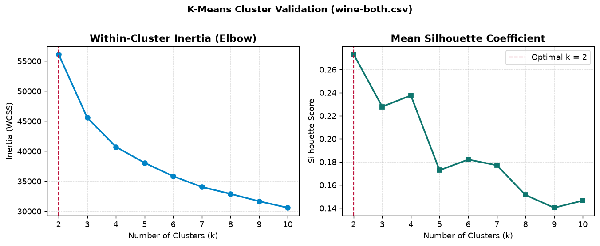
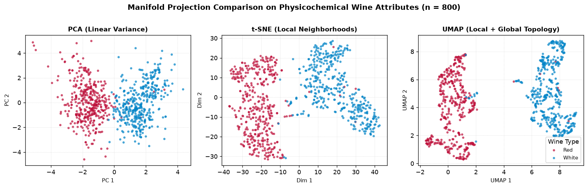
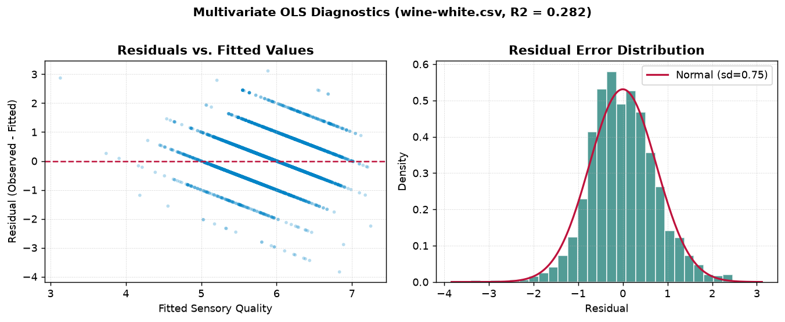

9 Polyglot Data Modeling
The fourth phase of the OSEMN framework is data modeling (Model), paired directly with empirical evaluation (iNterpret). At this stage, our data has been acquired (Chapter 5), cleaned and transformed (Chapter 6), and thoroughly explored (Chapter 7). We now construct predictive, descriptive, and inferential models across both unsupervised and supervised machine learning domains.
Rather than forcing complex mathematical modeling into custom shell scripts, modern command-line data science adopts a polyglot architecture:
- Standalone CLI modeling tools: High-performance, compiled command-line utilities engineered specifically for rapid iteration (Tapkee for dimensionality reduction, Vowpal Wabbit for online out-of-core learning, and SKLL for declarative model benchmarking).
- Polyglot scripting with R and Python: Direct
invocation of R scripts (
Rscript) for classical statistical inference and Python scripts (python3) for algorithmic machine learning via scikit-learn. - Nushell as universal orchestrator: Nushell handles end-to-end data pipelines, formats input feature streams, launches modeling processes concurrently, parses tabular outputs, and computes comparative performance benchmarks.
We begin by entering the chapter working directory
/data/ch09:
cd /data/ch09From this point forward, all code examples and modeling pipelines
execute within /data/ch09.
9.1 Data Preparation and Exploration of the Wine Dataset
First, check the dataset files available inside
/data/ch09:
lsThe files wine-red.csv (1,599 red wines) and
wine-white.csv (4,898 white wines) document 11
physicochemical properties (acidity, residual sugar, chlorides, sulfur
dioxide, pH, sulphates, alcohol) and subjective sensory quality ratings
(0 to 10) from the classic vinho verde dataset (Cortez et al.,
2009).
We concatenate both datasets into a single unified table
(wine-both.csv), creating a categorical type
feature and saving to disk:
let red = open wine-red.csv | insert type "red"
let white = open wine-white.csv | insert type "white"
let both = $red | append $white
$both | first 5
$both | save -f wine-both-generated.csvNext, we check the class balance (red versus
white) with histogram:
open wine-both.csv | histogram type
open wine-both.csv
| histogram type
| save -f wine_type_distribution.csvBefore fitting any statistical model, we plot the empirical
distributions of sensory quality and alcohol concentration across wine
varieties using plot_wine_eda.R. Display its source code in
the terminal:
bat plot_wine_eda.R#!/usr/bin/env Rscript
suppressPackageStartupMessages(library(ggplot2))
df <- read.csv("wine.csv")
p1 <- ggplot(df, aes(x = quality, fill = type)) +
geom_density(adjust = 3, alpha = 0.5) +
labs(
title = "Quality Distribution by Wine Type",
x = "Sensory Quality", y = "Density"
) +
theme_minimal()
ggsave(
"wine-quality.png",
plot = p1, width = 6, height = 4, dpi = 120
)
ggsave(
"wine_eda.png",
plot = p1, width = 6, height = 4, dpi = 120
)
p2 <- ggplot(df, aes(x = alcohol, y = quality, color = type)) +
geom_smooth(method = "loess", formula = y ~ x) +
labs(
title = "Alcohol vs. Quality by Wine Type",
x = "Alcohol (%)", y = "Sensory Quality"
) +
theme_minimal()
ggsave(
"wine-alcohol-vs-quality.png",
plot = p2, width = 6, height = 4, dpi = 120
)Three building blocks structure plot_wine_eda.R:
- Silent package loading and ingestion:
suppressPackageStartupMessageskeeps standard output free of startup banners beforeread.csv("wine.csv")loads all 6,497 observations. - Smoothed class-conditional density
(
p1):geom_density(adjust = 3, alpha = 0.5)widens the Gaussian kernel bandwidth to smooth discrete integer quality scores acrossredandwhitewines. - Non-parametric trend estimation (
p2):geom_smooth(method = "loess", formula = y ~ x)fits local polynomial regressions of sensory quality on alcohol percentage for each wine variety, exporting crisp raster figures viaggsave.
We execute the script and render wine_eda.png directly
inside the terminal with timg:
Rscript plot_wine_eda.R
timg -g 80x25 wine_eda.png
9.2 Dimensionality Reduction (PCA and t-SNE)
High-dimensional feature tables often suffer from strong collinearity and geometric sparsity. Dimensionality reduction maps correlated predictors into a low-dimensional subspace (typically two or three coordinates) that retains either global variance or local neighborhood structure:
- Principal Component Analysis (PCA): Orthogonal linear projection aligned with directions of maximum sample variance.
- t-Distributed Stochastic Neighbor Embedding (t-SNE): Non-linear manifold embedding that converts pairwise Euclidean distances into conditional probabilities to preserve local neighborhoods.
9.2.1 Dimensionality Reduction with CLI Tools
The dsin container includes Tapkee (Lisitsyn et al.,
2013), a compiled C++ template library for fast spectral and
manifold dimensionality reduction. Like most C++ numerical binaries,
tapkee knows nothing about Nushell schemas, column names,
or string labels. It expects a headerless file of floating-point numbers
separated by a declared delimiter (--delimiter ",") and
writes unlabeled coordinate rows to an output file.
Running tapkee directly therefore requires an explicit
three-stage pipeline in Nushell: pre-processing the input matrix,
invoking the native binary, and post-processing the raw coordinate
stream. First, we slice 200 observations from
wine-both.csv, drop type and
quality so only the 11 continuous physicochemical
measurements remain, serialize a headerless CSV matrix, and call
tapkee:
let sample_w = open wine-both.csv | first 200
$sample_w
| reject type quality
| to csv --noheaders
| save -f wine_matrix.csv
let tk_cmd = [
"-i" "wine_matrix.csv" "-o" "wine_pca_raw.csv"
"-m" "pca" "-td" "2" "--delimiter" ","
]
tapkee ...$tk_cmd
open --raw wine_pca_raw.csv | lines | first 5Inspecting the raw output shows plain comma-separated coordinate
pairs (-1.67715,-16.4492) with neither headers nor row
identifiers. Because tapkee preserves input row order, we
parse the headerless file back into Nushell, assign descriptive column
names (dim_1, dim_2), round each coordinate to
four decimal places, and merge the projection horizontally onto
$sample_w:
let coords = open --raw wine_pca_raw.csv
| from csv --noheaders
| rename dim_1 dim_2
| update dim_1 { into float | math round -p 4 }
| update dim_2 { into float | math round -p 4 }
let direct_pca = $sample_w
| merge $coords
| select type quality dim_1 dim_2
$direct_pca | first 5
rm -f wine_matrix.csv wine_pca_raw.csvRepeating that manual sequence (feature isolation, temporary CSV
creation, external binary execution, float parsing, horizontal merge,
and file cleanup) every time we explore a projection quickly clutters
interactive sessions. In dsin_tools.nu, the custom command
tapkee-reduce encapsulates those exact
operations behind a typed table -> table signature. To
inspect its implementation directly in the terminal, we execute
view-code tapkee-reduce:
view-code tapkee-reduce# Run Tapkee dimensionality reduction on a numeric table.
export def tapkee-reduce [
--method(-m): string = "pca"
--target-dim(-d): int = 2
--label-col(-l): string
--cols(-c): list<string>
]: table -> table {
let tbl = $in
let norm_m = if $method == "tsne" { "t-sne" } else { $method }
let has_cols = ($cols != null) and (($cols | length) > 0)
let has_lbl = if ($label_col != null) {
$label_col in ($tbl | columns)
} else { false }
let num_tbl = if $has_cols {
$tbl | select ...$cols
} else if $has_lbl {
$tbl | reject $label_col
} else {
let non_num = ["type"] | where { |c| $c in ($tbl | columns) }
if ($non_num | is-not-empty) {
$tbl | reject ...$non_num
} else {
$tbl
}
}
let tmp_in = mktemp --suffix ".csv"
let tmp_out = mktemp --suffix ".tsv"
$num_tbl | to csv --noheaders | save -f $tmp_in
let tk_args = [
"-i" $tmp_in "-o" $tmp_out
"-m" $norm_m "-td" ($target_dim | into string)
"--delimiter" ","
]
tapkee ...$tk_args
let raw_coords = open --raw $tmp_out
| lines
| where ($it | str trim | is-not-empty)
rm -f $tmp_in $tmp_out
let coords_tbl = $raw_coords | each { |line|
let parts = $line
| split row ","
| each { |v| $v | str trim | into float | math round -p 4 }
mut rec = {}
for idx in 0..<($parts | length) {
let val = $parts | get $idx
let k1 = $"dim($idx + 1)"
let k2 = $"dim_($idx + 1)"
$rec = $rec | insert $k1 $val | insert $k2 $val
}
$rec
}
$tbl | merge $coords_tbl
}Four design choices turn the raw C++ binary into a composable shell operator:
- Flexible schema filtering: Callers can pass an
explicit feature list (
--cols), exclude a target label (--label-col), or rely on automatic removal of categoricaltypelabels while retaining every original column in$tblfor the final merge. - Alias normalization: Translates
--method tsneinto Tapkee’s canonical"t-sne"identifier so interactive typos do not abort pipelines. - Ephemeral file hygiene: Allocates scratch files via
mktempand deletes them immediately after reading$tmp_out, preventing leftover.csvartifacts in/data/ch09. - General
-dimensional
reconstruction: Dynamically builds
dim_1,dim_2, …,dim_drecords for arbitrary--target-dimvalues before executing$tbl | merge $coords_tbl.
We now repeat the exact same 200-row PCA projection using
tapkee-reduce, obtaining identical coordinates in a single
pipeline:
let features = [
"fixed_acidity" "volatile_acidity" "citric_acid"
"residual_sugar" "chlorides" "free_sulfur_dioxide"
"total_sulfur_dioxide" "density" "ph" "sulphates" "alcohol"
]
let pca_res = open wine-both.csv
| first 200
| tapkee-reduce --method pca --cols $features
| select type quality dim_1 dim_2
$pca_res | first 5
$pca_res | save -f wine_pca_tapkee.csvSwitching --method pca to --method t-sne
computes a two-dimensional non-linear manifold embedding through the
exact same interface:
let tsne_res = open wine-both.csv
| first 150
| tapkee-reduce --method t-sne --cols $features
| select type quality dim_1 dim_2
$tsne_res | first 5
$tsne_res | save -f wine_tsne_tapkee.csv
9.2.2 Dimensionality Reduction with
Rscript
While tapkee excels at rapid coordinate projection,
statistical diagnostics often require inspecting eigenvalues and
cumulative explained variance across components. The script
pca_wine.R performs standardized singular value
decomposition in R (prcomp) and streams variance summaries
directly to standard output:
bat pca_wine.R#!/usr/bin/env Rscript
df <- read.csv("wine.csv", stringsAsFactors = FALSE)
num_cols <- setdiff(names(df), c("type", "quality"))
pca <- prcomp(df[, num_cols], center = TRUE, scale. = TRUE)
var_exp <- (pca$sdev^2) / sum(pca$sdev^2) * 100
# Save loadings summary to stdout as CSV
out <- data.frame(
component = paste0("PC", 1:5),
std_dev = round(pca$sdev[1:5], 4),
pct_variance = round(var_exp[1:5], 2),
cum_variance = round(cumsum(var_exp)[1:5], 2)
)
write.csv(out, stdout(), row.names = FALSE, quote = FALSE)
# Also save 2D coordinates to wine_pca_r.csv
coords <- data.frame(
pc1 = round(pca$x[, 1], 4),
pc2 = round(pca$x[, 2], 4),
type = df$type,
quality = df$quality
)
write.csv(coords, "wine_pca_r.csv", row.names = FALSE, quote = FALSE)Notice the three statistical and I/O stages in
pca_wine.R:
- Feature isolation and z-score standardization:
setdiffremovestypeandquality, whileprcomp(..., center = TRUE, scale. = TRUE)standardizes all 11 predictors to unit variance so variables with large magnitudes (such astotal_sulfur_dioxide) do not dominatePC1. - Spectral variance decomposition: Squaring singular
values (
pca$sdev^2) yields component eigenvalues, from which marginal (var_exp) and cumulative (cumsum(var_exp)) variance percentages are derived. - Dual tabular output:
write.csv(out, stdout(), ...)emits a clean 5-row variance summary to standard output for Nushell’sfrom csvparser, while writing full 2D scores (pca$x[, 1:2]) towine_pca_r.csv.
Executing Rscript pca_wine.R | from csv converts R’s
text stream into a typed Nushell table:
let pca_r = Rscript pca_wine.R | from csv
$pca_r
$pca_r | save -f wine_pca_summary_r.csvThe first four principal components account for 73.37% of total
physicochemical variance across the 11 predictors (PC1
alone captures 27.54%, driven by the contrast between sulfur dioxide
levels in white wines and volatile acidity in red wines).
9.2.3 Dimensionality Reduction with Python
The companion script pca_wine.py reproduces the same
orthogonal decomposition using scikit-learn:
bat pca_wine.py#!/usr/bin/env python3
import sys
import pandas as pd
from sklearn.decomposition import PCA
from sklearn.preprocessing import StandardScaler
df = pd.read_csv("wine.csv")
feat_cols = [c for c in df.columns if c not in ("type", "quality")]
X = StandardScaler().fit_transform(df[feat_cols])
pca = PCA(n_components=5, random_state=42)
coords = pca.fit_transform(X)
proj = pd.DataFrame({
"pc1": coords[:, 0].round(4),
"pc2": coords[:, 1].round(4),
"type": df["type"],
"quality": df["quality"],
})
proj.to_csv("wine_pca_py.csv", index=False)
pct = pca.explained_variance_ratio_ * 100.0
summary = pd.DataFrame({
"component": [f"PC{i + 1}" for i in range(5)],
"explained_variance": pca.explained_variance_.round(4),
"pct_variance": pct.round(2),
"cum_variance": pct.cumsum().round(2),
})
summary.to_csv(sys.stdout, index=False)Three components align pca_wine.py with its R
counterpart:
- Explicit matrix scaling: Unlike R’s
prcomp(scale. = TRUE),scikit-learn’sPCAcenters features without scaling them; applyingStandardScaler().fit_transformfirst ensures identical correlation-matrix eigenstructure. - Truncated SVD projection:
PCA(n_components=5, random_state=42)extracts the top five orthogonal components and stores row projections (pc1,pc2) inwine_pca_py.csv. - Standard-output serialization: Writing
summary.to_csv(sys.stdout, index=False)lets Nushell ingestexplained_variance,pct_variance, andcum_variancedirectly viafrom csv.
We execute pca_wine.py and verify that Python and R
agree to two decimal places on both marginal and cumulative
variance:
let pca_py = python3 pca_wine.py | from csv
$pca_py9.2.4 Multicollinearity Diagnostics (VIF) and Principal Component Regression (PCR)
Severe correlation among predictors inflates the variance of Ordinary Least Squares (OLS) slope estimates, making individual coefficients unstable under small sample perturbations. For each predictor , the Variance Inflation Factor is defined as , where is the coefficient of determination obtained by regressing on all remaining predictors. Values above 10 signal acute collinearity.
Using morphological measurements of 159 fish specimens in
Fish.csv, the script vif_pcr_fish.py computes
exact VIF scores and contrasts full 5-predictor OLS against
Principal Component Regression (PCR) on the first two
orthogonal components:
bat vif_pcr_fish.py#!/usr/bin/env python3
import sys
import numpy as np
import pandas as pd
from sklearn.decomposition import PCA
from sklearn.linear_model import LinearRegression
from sklearn.metrics import mean_squared_error, r2_score
df = pd.read_csv("Fish.csv")
pred_cols = ["Length1", "Length2", "Length3", "Height", "Width"]
X = df[pred_cols]
y = df["Weight"]
vif_rows = []
for col in pred_cols:
X_other = X.drop(columns=[col])
reg = LinearRegression().fit(X_other, X[col])
r2_i = reg.score(X_other, X[col])
vif = 1.0 / (1.0 - r2_i) if r2_i < 0.99999 else 9999.0
vif_rows.append({"feature": col, "vif": round(float(vif), 2)})
pd.DataFrame(vif_rows).to_csv("fish_vif_py.csv", index=False)
ols = LinearRegression().fit(X, y)
ols_p = ols.predict(X)
ols_r2 = r2_score(y, ols_p)
ols_rmse = np.sqrt(mean_squared_error(y, ols_p))
X_pca = PCA(n_components=2).fit_transform(X)
pcr = LinearRegression().fit(X_pca, y)
pcr_p = pcr.predict(X_pca)
pcr_r2 = r2_score(y, pcr_p)
pcr_rmse = np.sqrt(mean_squared_error(y, pcr_p))
comp_df = pd.DataFrame([
{
"model": "Python_OLS_Multiple_Regression",
"components": 5,
"r2": round(float(ols_r2), 4),
"rmse": round(float(ols_rmse), 2),
},
{
"model": "Python_PCR_Principal_Components",
"components": 2,
"r2": round(float(pcr_r2), 4),
"rmse": round(float(pcr_rmse), 2),
},
])
comp_df.to_csv("fish_pcr_py.csv", index=False)
comp_df.to_csv(sys.stdout, index=False)Three algorithmic blocks drive vif_pcr_fish.py:
- Auxiliary predictor regressions
(
vif_rows): Loops over the five morphometric predictors, regressing each columnX[col]againstX_otherto compute and exporting the diagnostic table tofish_vif_py.csv. - Baseline OLS fit: Estimates unconstrained multiple
linear regression on all five correlated predictors, recording in-sample
and root mean squared error (
ols_rmse). - Orthogonal PCR reduction: Projects
Xonto two uncorrelated principal axes (PCA(n_components=2)) before fittingLinearRegression, writing comparative metrics tofish_pcr_py.csvandsys.stdout.
Running the script in Nushell reveals extreme collinearity among the
three length measurements (Length1, Length2,
Length3 all exceed
),
whereas two orthogonal components preserve
:
python3 vif_pcr_fish.py | from csv
open fish_vif_py.csv | sort-by vif -rWe cross-validate the same PCR comparison in R via
vif_pcr_fish.R:
bat vif_pcr_fish.R#!/usr/bin/env Rscript
df <- read.csv("Fish.csv")
pred_cols <- c("Length1", "Length2", "Length3", "Height", "Width")
X <- df[, pred_cols]
y <- df$Weight
fit_ols <- lm(Weight ~ ., data = df[, c(pred_cols, "Weight")])
r2_ols <- summary(fit_ols)$r.squared
rmse_ols <- sqrt(mean(residuals(fit_ols)^2))
pca <- prcomp(X, scale. = TRUE)
fit_pcr <- lm(y ~ pca$x[, 1:2])
r2_pcr <- summary(fit_pcr)$r.squared
rmse_pcr <- sqrt(mean(residuals(fit_pcr)^2))
out_comp <- data.frame(
model = c(
"R_OLS_Multiple_Regression", "R_PCR_Principal_Components"
),
components = c(5, 2),
r2 = round(c(r2_ols, r2_pcr), 4),
rmse = round(c(rmse_ols, rmse_pcr), 2)
)
write.csv(
out_comp, "fish_pcr_r.csv", row.names = FALSE, quote = FALSE
)
write.csv(out_comp, stdout(), row.names = FALSE, quote = FALSE)In vif_pcr_fish.R, lm(Weight ~ .) fits the
full five-variable linear model, prcomp(X, scale. = TRUE)
computes standardized principal components (pca$x[, 1:2]),
and lm(y ~ pca$x[, 1:2]) regresses fish weight onto those
two orthogonal scores before streaming the comparison table to
stdout():
Rscript vif_pcr_fish.R | from csv9.3 Clustering
Clustering partitions unlabeled observations into cohesive groups so that records within the same cluster share similar feature profiles while records across clusters remain distinct. Because no response label guides the optimization, geometric scaling and post-hoc validation determine whether discovered partitions reflect genuine structure or numerical artifacts.
This section covers four complementary clustering families:
- K-Means Clustering: Iterative centroid relocation minimizing within-cluster sum of squares (WCSS).
- Agglomerative Hierarchical Clustering: Bottom-up dendrogram construction under Ward’s minimum-variance linkage.
- Multi-Metric and Visual Cluster Validation: Selecting jointly via inertia elbow curves, Silhouette coefficients, Calinski-Harabasz variance ratios, and Davies-Bouldin scores.
- Density and Medoid Methods (DBSCAN and PAM): Isolating morphological outliers as explicit noise points and replacing sensitive arithmetic means with actual sample medoids.
9.3.1 K-Means Clustering
Unlike tapkee, which ships as a standalone C++ binary,
our tabular K-Means pipeline delegates numerical optimization to a
compact, stream-aware Python helper (kmeans_cluster.py)
built on scikit-learn. Keeping the numerical kernel in an
explicit .py script rather than hiding inline Python
strings inside shell functions lets us inspect, test, and invoke the
clustering logic independently before wrapping it in Nushell.
We open kmeans_cluster.py in /data/ch09
with bat:
bat kmeans_cluster.py#!/usr/bin/env python3
"""Partition numeric columns via standardized K-Means clustering."""
import argparse
import sys
import pandas as pd
from sklearn.cluster import KMeans
from sklearn.preprocessing import StandardScaler
def main():
p = argparse.ArgumentParser(description="K-Means CLI helper.")
p.add_argument("--input", "-i", default="-")
p.add_argument("--k", "-k", type=int, default=2)
p.add_argument("--exclude", "-e", default="type")
p.add_argument("--cols", "-c", default="")
args = p.parse_args()
src = sys.stdin if args.input == "-" else args.input
df = pd.read_csv(src)
if args.cols:
num_cols = [
c for c in args.cols.split(",") if c in df.columns
]
else:
excl = set(
x.strip() for x in args.exclude.split(",") if x.strip()
)
excl.add("type")
num_cols = [
c for c in df.columns
if c not in excl and pd.api.types.is_numeric_dtype(df[c])
]
X = StandardScaler().fit_transform(df[num_cols])
km = KMeans(n_clusters=args.k, n_init=10, random_state=42)
labels = km.fit_predict(X)
df["cluster"] = [f"cluster_{c + 1}" for c in labels]
df.to_csv(sys.stdout, index=False)
if __name__ == "__main__":
main()Three design decisions make kmeans_cluster.py behave
like a native Unix filter:
- Stream or file ingestion (
--input -): Readingsys.stdinwhen--inputdefaults to"-"allows Nushell tables serialized withto csvto flow straight into Python without manual intermediate files, while--colsand--excludeprevent response labels (quality,type) from leaking into the feature matrix. - Mandatory z-score standardization: Euclidean
distance is not scale-invariant; without
StandardScaler(),total_sulfur_dioxide(ranging from 6 to 440 mg/L) would overwhelmchlorides(ranging from 0.009 to 0.611 g/L). - Deterministic multi-start Lloyd iterations:
KMeans(n_clusters=args.k, n_init=10, random_state=42)runs ten independent centroid initializations (k-means++), retains the lowest-inertia solution, appends human-readable labels (cluster_1, …,cluster_K), and writes CSV output tosys.stdout.
Before introducing any Nushell wrapper, we run
kmeans_cluster.py directly in a raw pipeline: Nushell
serializes wine-both.csv to CSV text on standard output,
Python computes two standardized clusters excluding type
and quality, and Nushell parses the returned stream via
from csv to cross-tabulate clusters against true wine
varieties in Polars:
let raw_km = open wine-both.csv
| to csv
| python3 kmeans_cluster.py --k 2 --exclude "type,quality"
| from csv
$raw_km
| select type quality alcohol volatile_acidity cluster
| first 5
$raw_km
| polars into-df
| polars group-by cluster type
| polars agg [
(polars col quality | polars count | polars as n_wines)
(polars col alcohol | polars mean | polars as mean_alcohol)
]
| polars collect
| polars into-nu
| sort-by cluster typeLook at that contingency table: without ever seeing the
type column, unsupervised Euclidean partitioning in
standardized 11-dimensional chemical space places over 98.5% of red
wines into one cluster and over 98.5% of white wines into the other.
To eliminate manual to csv and from csv
plumbing and provide native Nushell tab-completion,
dsin_tools.nu defines the wrapper
kmeans-cluster. We inspect its
implementation in the terminal via
view-code kmeans-cluster:
view-code kmeans-cluster# Partition numeric columns via standardized K-Means clustering.
export def kmeans-cluster [
--k(-k): int = 2
--clusters: int = 0
--label-col(-l): string
--cols(-c): list<string>
]: table -> table {
let tbl = $in
let n_k = if $clusters > 0 { $clusters } else { $k }
let tmp_in = mktemp --suffix ".csv"
$tbl | to csv | save -f $tmp_in
let lbl = $label_col | default "type"
let cols_flag = if ($cols != null) and (($cols | length) > 0) {
["--cols" ($cols | str join ",")]
} else { [] }
let bin_p = "/usr/local/bin/kmeans-cluster-py"
let py_km = if ($bin_p | path exists) {
$bin_p
} else if ("/data/ch09/kmeans_cluster.py" | path exists) {
"/data/ch09/kmeans_cluster.py"
} else {
"kmeans_cluster.py"
}
let km_args = [
"--input" $tmp_in
"--k" ($n_k | into string)
"--exclude" $lbl
...$cols_flag
]
let res = python3 $py_km ...$km_args | from csv
rm -f $tmp_in
$res
}Inside kmeans-cluster, Nushell converts
--cols from a typed list<string> into a
comma-delimited CLI flag via list spreading
(...$cols_flag), resolves the installed helper path
(/usr/local/bin/kmeans-cluster-py) so the command works
from any working directory, and cleans up $tmp_in before
returning the enriched table.
Repeating the exact same analysis through kmeans-cluster
reduces the entire workflow to a concise, strongly typed pipeline:
let features = [
"fixed_acidity" "volatile_acidity" "citric_acid"
"residual_sugar" "chlorides" "free_sulfur_dioxide"
"total_sulfur_dioxide" "density" "ph" "sulphates" "alcohol"
]
let clustered = open wine-both.csv
| kmeans-cluster --k 2 --cols $features
$clustered
| select type quality alcohol volatile_acidity cluster
| first 5
$clustered
| select type quality alcohol volatile_acidity cluster
| save -f wine_kmeans_cli.csv
$clustered
| polars into-df
| polars group-by cluster type
| polars agg [
(polars col quality | polars count | polars as n_vinos)
(polars col alcohol | polars mean | polars as mean_alcohol)
]
| polars collect
| polars into-nu
| sort-by cluster type
| tee { save -f wine_kmeans_contingency.csv }9.3.2 K-Means Diagnostics in R and Python
When reporting cluster solutions in statistical studies, we also need
within-cluster sums of squares (withinss) and convergence
diagnostics across candidate partitions. In R,
cluster_wine.R fits a 20-start K-Means model
(nstart = 20) and cross-tabulates cluster purity
directly:
bat cluster_wine.R#!/usr/bin/env Rscript
set.seed(42)
df <- read.csv("wine.csv", stringsAsFactors = FALSE)
num_cols <- setdiff(names(df), c("type", "quality"))
X <- scale(df[, num_cols])
km <- kmeans(X, centers = 2, nstart = 20)
df$cluster <- paste0("cluster_", km$cluster)
keep_cols <- c(
"type", "quality", "alcohol", "volatile_acidity", "cluster"
)
write.csv(
df[, keep_cols], "wine_kmeans_r.csv",
row.names = FALSE, quote = FALSE
)
tab <- as.data.frame.matrix(table(df$cluster, df$type))
out <- data.frame(
cluster = rownames(tab),
size = as.integer(km$size),
withinss = round(km$withinss, 2),
red_count = tab$red,
white_count = tab$white,
dominant_type = ifelse(tab$red > tab$white, "red", "white")
)
write.csv(out, stdout(), row.names = FALSE, quote = FALSE)Notice how cluster_wine.R standardizes predictors via
scale(), runs Hartigan-Wong optimization across 20 random
starts (kmeans(X, centers = 2, nstart = 20)), and combines
cluster sizes (km$size), within-cluster dispersion
(km$withinss), and contingency counts
(table(df$cluster, df$type)) into a two-row CSV summary
emitted to stdout():
let km_r = Rscript cluster_wine.R | from csv
$km_r
$km_r | save -f wine_clusters_r.csvIn Python, cluster_wine.py sweeps
to track how inertia, mean silhouette width, and iteration counts evolve
as partitions subdivide:
bat cluster_wine.py#!/usr/bin/env python3
import sys
import pandas as pd
from sklearn.cluster import KMeans
from sklearn.metrics import silhouette_score
from sklearn.preprocessing import StandardScaler
df = pd.read_csv("wine.csv")
feat_cols = [c for c in df.columns if c not in ("type", "quality")]
X = StandardScaler().fit_transform(df[feat_cols])
rows = []
for k in [2, 3, 4, 5]:
km = KMeans(n_clusters=k, n_init=10, random_state=42)
labels = km.fit_predict(X)
sil = silhouette_score(
X, labels, sample_size=1500, random_state=42
)
if k == 2:
keep = ["type", "quality", "alcohol", "volatile_acidity"]
df_out = df[keep].copy()
df_out["cluster"] = [f"cluster_{c + 1}" for c in labels]
df_out.to_csv("wine_kmeans_py.csv", index=False)
rows.append({
"k_clusters": k,
"inertia": round(float(km.inertia_), 2),
"silhouette": round(float(sil), 4),
"iterations": int(km.n_iter_),
})
pd.DataFrame(rows).to_csv(sys.stdout, index=False)Inside the loop,
silhouette_score(..., sample_size=1500, random_state=42)
estimates average cohesion-separation contrast in
time on a fixed subsample rather than incurring quadratic
pairwise distance overhead, exporting row labels at
and streaming the 4-row metric table to sys.stdout:
let km_py = python3 cluster_wine.py | from csv
$km_py
$km_py | save -f wine_clusters_py.csv9.3.3 Agglomerative Hierarchical Clustering
Whereas K-Means commits to a fixed
upfront, agglomerative hierarchical clustering builds a complete binary
merge tree (dendrogram) from
singleton leaves up to a single root partition. Ward’s minimum-variance
criterion (ward.D2) merges at each step the pair of
clusters that induces the smallest increase in total within-cluster sum
of squares.
We start with the R implementation in hclust_fish.R:
bat hclust_fish.R#!/usr/bin/env Rscript
df <- read.csv("Fish.csv", stringsAsFactors = FALSE)
num_cols <- c(
"Weight", "Length1", "Length2", "Length3", "Height", "Width"
)
X <- scale(df[, num_cols])
d <- dist(X, method = "euclidean")
hc <- hclust(d, method = "ward.D2")
df$cluster <- paste0("cluster_", cutree(hc, k = 3))
keep <- c("Species", "Weight", "Height", "Width", "cluster")
write.csv(
df[, keep], "fish_hclust_r.csv", row.names = FALSE, quote = FALSE
)
tab <- as.data.frame.matrix(table(df$cluster, df$Species))
dom_idx <- max.col(tab, ties.method = "first")
out <- data.frame(
cluster = rownames(tab),
total_samples = as.integer(rowSums(tab)),
dominant_species = colnames(tab)[dom_idx],
dominant_count = apply(tab, 1, max)
)
write.csv(out, stdout(), row.names = FALSE, quote = FALSE)Three operations define hclust_fish.R:
dist(X, method = "euclidean") computes the
pairwise distance matrix across standardized morphometric variables,
hclust(d, method = "ward.D2") constructs the
variance-minimizing dendrogram, and cutree(hc, k = 3)
slices the tree into three morphological groups whose dominant
biological species are summarized via max.col(tab):
let hc_r = Rscript hclust_fish.R | from csv
$hc_r
$hc_r | save -f fish_hclust_r.csvThe companion script hclust_fish.py evaluates Silhouette
widths across tree cuts
using AgglomerativeClustering:
bat hclust_fish.py#!/usr/bin/env python3
import sys
import pandas as pd
from sklearn.cluster import AgglomerativeClustering
from sklearn.metrics import silhouette_score
from sklearn.preprocessing import StandardScaler
df = pd.read_csv("Fish.csv")
num_cols = [
"Weight", "Length1", "Length2", "Length3", "Height", "Width"
]
X = StandardScaler().fit_transform(df[num_cols])
rows = []
for k in [2, 3, 4, 5]:
model = AgglomerativeClustering(n_clusters=k, linkage="ward")
labels = model.fit_predict(X)
sil = silhouette_score(X, labels)
if k == 3:
df_out = df[["Species", "Weight", "Height", "Width"]].copy()
df_out["cluster"] = [f"cluster_{c + 1}" for c in labels]
df_out.to_csv("fish_hclust_py.csv", index=False)
rows.append({
"linkage": "ward",
"n_clusters": k,
"silhouette": round(float(sil), 4),
})
pd.DataFrame(rows).to_csv(sys.stdout, index=False)After z-score scaling (StandardScaler),
AgglomerativeClustering(n_clusters=k, linkage="ward") fits
deterministic Ward merges, persists specimen assignments at
,
and streams Silhouette scores for every cut level to
sys.stdout:
let hc_py = python3 hclust_fish.py | from csv
$hc_py9.3.4 Multi-Metric Validation and Visual Elbow Diagnostics
Choosing the number of clusters solely from monotone-decreasing WCSS inertia can be subjective when the elbow bends gradually. Rigorous unsupervised validation combines inertia with internal separation criteria:
- Silhouette Score (, higher is better): Contrasts mean intra-cluster distance against nearest-neighbor cluster distance via .
- Calinski-Harabasz Index (higher is better): Ratio of between-cluster dispersion to within-cluster dispersion adjusted for degrees of freedom.
- Davies-Bouldin Index (lower is better): Average worst-case similarity ratio between each cluster and its closest competitor.
On the retail banking dataset banco.csv,
cluster_eval.py computes all four quantities across
over customer age, income, credit-card spending, and mortgage
balance:
bat cluster_eval.py#!/usr/bin/env python3
import sys
import pandas as pd
from sklearn.cluster import KMeans
from sklearn.metrics import (
calinski_harabasz_score,
davies_bouldin_score,
silhouette_score,
)
from sklearn.preprocessing import StandardScaler
df = pd.read_csv("banco.csv")
features = ["edad", "ingreso", "gasto_tarjeta", "hipoteca"]
X = StandardScaler().fit_transform(df[features])
rows = []
for k in range(2, 7):
km = KMeans(n_clusters=k, n_init=10, random_state=42)
labels = km.fit_predict(X)
sil = silhouette_score(
X, labels, sample_size=1000, random_state=42
)
ch = calinski_harabasz_score(X, labels)
db = davies_bouldin_score(X, labels)
rows.append({
"k": k,
"inertia": round(float(km.inertia_), 2),
"silhouette": round(float(sil), 4),
"calinski_harabasz": round(float(ch), 2),
"davies_bouldin": round(float(db), 4),
})
pd.DataFrame(rows).to_csv(sys.stdout, index=False)In cluster_eval.py, StandardScaler
equalizes currency and age units, the range(2, 7) loop
evaluates each fitted KMeans partition on all three
internal indices simultaneously, and
pd.DataFrame(rows).to_csv(sys.stdout, index=False) emits a
tidy 5-row evaluation table that we rank directly in Nushell:
let eval_b = python3 cluster_eval.py | from csv
$eval_b | save -f banco_cluster_eval.csv
$eval_b | sort-by silhouette -rTo inspect inertia curvature and silhouette peaks visually across a
wider sweep
()
on wine-both.csv, we use the diagnostic plotting script
plot_kmeans_elbow.py:
bat plot_kmeans_elbow.py#!/opt/modern-ml/bin/python
"""Render K-Means inertia and silhouette curves (k = 2..10)."""
import os
import sys
import warnings
os.environ.setdefault("MPLCONFIGDIR", "/tmp/matplotlib_cache")
warnings.filterwarnings("ignore")
import matplotlib
matplotlib.use("Agg")
import matplotlib.pyplot as plt
import numpy as np
import pandas as pd
from sklearn.cluster import KMeans
from sklearn.metrics import silhouette_score
from sklearn.preprocessing import StandardScaler
def main():
csv_in = sys.argv[1] if len(sys.argv) > 1 else "wine-both.csv"
png_out = (
sys.argv[2] if len(sys.argv) > 2 else "kmeans_elbow.png"
)
df = pd.read_csv(csv_in)
drop_c = [c for c in ("type", "quality") if c in df.columns]
num_df = df.drop(columns=drop_c).select_dtypes(
include=[np.number]
)
X = StandardScaler().fit_transform(num_df)
ks = list(range(2, 11))
inertias, sils = [], []
for k in ks:
km = KMeans(n_clusters=k, n_init=10, random_state=42)
labels = km.fit_predict(X)
inertias.append(km.inertia_)
sil = silhouette_score(
X, labels, sample_size=1500, random_state=42
)
sils.append(sil)
best_k = ks[int(np.argmax(sils))]
fig, (ax1, ax2) = plt.subplots(
1, 2, figsize=(10.5, 4.2), dpi=130
)
ax1.plot(ks, inertias, "o-", color="#0284c7", lw=2, ms=6)
ax1.axvline(best_k, color="#be123c", ls="--", lw=1.2)
ax1.set_title("Within-Cluster Inertia", fontweight="bold")
ax1.set_xlabel("Number of Clusters (k)")
ax1.set_ylabel("Inertia (WCSS)")
ax1.set_xticks(ks)
ax1.grid(True, ls="--", lw=0.4, alpha=0.5)
ax2.plot(ks, sils, "s-", color="#0f766e", lw=2, ms=6)
ax2.axvline(
best_k, color="#be123c", ls="--", lw=1.2,
label=f"Optimal k = {best_k}"
)
ax2.set_title("Mean Silhouette Score", fontweight="bold")
ax2.set_xlabel("Number of Clusters (k)")
ax2.set_ylabel("Silhouette Score")
ax2.set_xticks(ks)
ax2.legend(loc="best", frameon=True)
ax2.grid(True, ls="--", lw=0.4, alpha=0.5)
fig.suptitle(
f"K-Means Cluster Validation ({csv_in})",
fontsize=11.5, fontweight="bold", y=1.01
)
fig.tight_layout()
fig.savefig(png_out, bbox_inches="tight", dpi=130)
print(f"Saved {png_out} (optimal k={best_k})")
if __name__ == "__main__":
main()Three components coordinate plot_kmeans_elbow.py: CLI
positional defaults (wine-both.csv and
kmeans_elbow.png) allow zero-argument execution or reuse on
any numeric table, the ks = range(2, 11) sweep records both
km.inertia_ and subsampled silhouette_score
values while locating best_k = ks[np.argmax(sils)], and
headless matplotlib (Agg) pairs the WCSS elbow
curve (ax1) with the silhouette profile (ax2)
marked at best_k.
We generate kmeans_elbow.png and inspect the dual-panel
chart directly inside the terminal via timg:
python plot_kmeans_elbow.py
timg -g 80x25 kmeans_elbow.png
Both diagnostics tell a consistent story: WCSS drops steepest between
and
,
while mean silhouette peaks sharply at
(0.273, capturing the primary red-versus-white split) with
a secondary shoulder at
corresponding to dry versus residual-sugar white wine styles.
9.3.5 Density-Based Clustering with DBSCAN and K-Medoids with PAM
Centroid methods force every observation, no matter how extreme, into
the nearest Voronoi cell, pulling cluster means toward outliers.
DBSCAN (Density-Based Spatial Clustering of
Applications with Noise) instead defines clusters as connected
regions containing at least min_samples neighbors within
radius
(eps), labeling isolated observations in sparse regions as
-1 (Noise / Outliers).
Inspect dbscan_fish.py to see how neighborhood density
separates core points from anomalies:
bat dbscan_fish.py#!/usr/bin/env python3
import sys
import pandas as pd
from sklearn.cluster import DBSCAN
from sklearn.preprocessing import StandardScaler
df = pd.read_csv("Fish.csv")
num_cols = [
"Weight", "Length1", "Length2", "Length3", "Height", "Width"
]
X_scaled = StandardScaler().fit_transform(df[num_cols])
db = DBSCAN(eps=0.9, min_samples=4)
df["cluster"] = db.fit_predict(X_scaled)
grouped = df.groupby("cluster").agg(
n_samples=("Species", "count"),
avg_weight=("Weight", lambda x: round(float(x.mean()), 1)),
avg_length=("Length1", lambda x: round(float(x.mean()), 1)),
avg_height=("Height", lambda x: round(float(x.mean()), 1)),
avg_width=("Width", lambda x: round(float(x.mean()), 1)),
).reset_index()
grouped["cluster_type"] = grouped["cluster"].apply(
lambda c: "Noise / Outliers" if c == -1 else f"Cluster {c}"
)
cols_out = [
"cluster", "cluster_type", "n_samples",
"avg_weight", "avg_length", "avg_height", "avg_width",
]
out = grouped[cols_out]
out.to_csv("fish_dbscan_py.csv", index=False)
out.to_csv(sys.stdout, index=False)In dbscan_fish.py, StandardScaler
normalizes the six morphometric dimensions so a uniform spherical radius
eps=0.9 applies equally across weight and length,
DBSCAN(eps=0.9, min_samples=4).fit_predict assigns
core/border points to non-negative cluster IDs and anomalies to
-1, and groupby("cluster").agg(...) computes
group-level morphological averages streamed to
sys.stdout:
python3 dbscan_fish.py | from csvNotice how heavy pike and perch outliers (avg_weight
above 1,000 g) are cleanly quarantined into cluster -1
(Noise / Outliers) rather than distorting the main
body-plan group.
When a fixed number of partitions
is desired alongside outlier resistance, Partitioning Around
Medoids (PAM) restricts cluster centers to actual observed
specimens (medoids) and minimizes pairwise dissimilarities
instead of squared deviations. Its R implementation lives in
pam_fish.R:
bat pam_fish.R#!/usr/bin/env Rscript
suppressPackageStartupMessages(library(cluster))
df <- read.csv("Fish.csv")
num_cols <- c(
"Weight", "Length1", "Length2", "Length3", "Height", "Width"
)
X <- scale(df[, num_cols])
fit_pam <- pam(X, k = 3, metric = "euclidean")
sil <- silhouette(fit_pam)
avg_sil <- mean(sil[, 3])
out <- data.frame(
model = "R_cluster_pam_kmedoids",
k_clusters = 3,
avg_silhouette = round(avg_sil, 4),
cluster_1_size = fit_pam$clusinfo[1, 1],
cluster_2_size = fit_pam$clusinfo[2, 1],
cluster_3_size = fit_pam$clusinfo[3, 1]
)
write.csv(
out, "fish_pam_r.csv", row.names = FALSE, quote = FALSE
)
write.csv(out, stdout(), row.names = FALSE, quote = FALSE)Using R’s cluster library,
pam(X, k = 3, metric = "euclidean") runs the BUILD and SWAP
medoid phases on standardized features, silhouette(fit_pam)
extracts observation-level silhouette widths (sil[, 3]),
and fit_pam$clusinfo[, 1] reports exact cluster
cardinalities to standard output:
Rscript pam_fish.R | from csv9.4 Regression: Predicting Wine Quality
Supervised regression learns a functional mapping
that predicts a continuous response from observed covariates. To
estimate sensory wine quality
()
on the 4,898 white wine samples in wine-white.csv, we
compare three distinct computational engines:
- Vowpal Wabbit (
vw): Out-of-core online linear optimization driven by stochastic gradient descent and feature hashing. - Multiple Linear Regression in R
(
regress_wine.R): Exact Ordinary Least Squares (OLS) estimation with parametric -tests and -values. - Penalized Linear and Ensemble Regression in Python
(
regress_wine.py): Standardized Ridge regression benchmarked against non-linear Random Forest ensembles.
9.4.1 Online Learning with Vowpal Wabbit
In-memory statistical packages allocate dense design matrices in RAM before computing a single gradient step. Vowpal Wabbit (Langford et al., 2007) reverses that architecture: it streams observations one line at a time from standard input or a binary cache file, mapping arbitrary feature names into a fixed-size weight vector via the hashing trick and updating weights on the fly with online stochastic gradient descent (SGD).
Every input record in Vowpal Wabbit obeys a plain-text wire grammar:
[label] [weight] [tag]|Namespace feat1:val1 feat2:val2 ...A white wine record with sensory quality 6, for
instance, serializes its eleven physicochemical predictors behind a
namespace marker |f (split across two lines here for
readability, though stored as one line on disk):
6 |f fixed_acidity:7 volatile_acidity:0.27 citric_acid:0.36
residual_sugar:20.7 chlorides:0.045 alcohol:8.8 ...Three syntactic tokens govern how vw parses each
record:
6: Continuous target response (quality).|f: Vertical bar separating response metadata from predictor namespaces, wherefnames the feature group (enabling fast namespace-level quadratic interactions when desired).fixed_acidity:7 volatile_acidity:0.27 ...: Whitespace-delimitedname:valuepairs hashed directly into integer indices without requiring an upfront feature dictionary.
9.4.1.1 Direct Terminal Pre-Processing, Execution, and Post-Processing
Before introducing any wrapper command, we run the entire Vowpal
Wabbit lifecycle directly from Nushell. First, split
wine-white.csv into 3,500 training rows and 1,398 held-out
test rows, format every record into
<quality> |f <col>:<val> lines, and check
the resulting text file:
let data = open wine-white.csv
let train = $data | first 3500
let test = $data | skip 3500
let fcols = $data | columns | where $it != "quality"
$train
| each { |r|
let kv = $fcols
| each { |c| $"($c):($r | get $c)" }
| str join " "
$"($r.quality) |f ($kv)"
}
| str join "\n"
| save -f /tmp/direct_train.vw
$test
| each { |r|
let kv = $fcols
| each { |c| $"($c):($r | get $c)" }
| str join " "
$"($r.quality) |f ($kv)"
}
| str join "\n"
| save -f /tmp/direct_test.vw
open --raw /tmp/direct_train.vw
| lines
| first 2
| each { str substring 0..64 }With both .vw files on disk, we invoke the native C++
vw binary twice: once to optimize squared-error weights
across 15 passes (caching parsed binary features in
/tmp/direct.cache for fast multi-epoch sweeps), and once in
frozen test mode (-t) to emit scalar predictions into
/tmp/direct_preds.txt:
(
vw --data /tmp/direct_train.vw
--final_regressor /tmp/direct_model.vw
--passes 15 -l 0.5
--cache_file /tmp/direct.cache --quiet
)
(
vw --data /tmp/direct_test.vw
-i /tmp/direct_model.vw -t
-p /tmp/direct_preds.txt --quiet
)Five flags control this two-phase CLI exchange:
--final_regressor: Writes learned weights to a compact binary model file.--passes 15and--cache_file: Streams 15 epochs over the binary cache instead of re-parsing ASCII text on every pass.-l 0.5: Sets the base SGD step size.-iand-t: Reloads the trained regressor and disables gradient updates during test-set evaluation.-p: Writes one newline-delimited floating-point prediction per test sample.
Because vw emits raw numbers without column headers or
original targets, we parse /tmp/direct_preds.txt in
Nushell, pair each prediction with $test.quality via
zip, compute signed and absolute residuals, and remove our
temporary files:
let raw_p = open --raw /tmp/direct_preds.txt
| lines
| where ($it | str trim | is-not-empty)
| each { into float }
let obs_y = $test.quality | each { into float }
let direct_vw = $obs_y | zip $raw_p | each { |pair|
let obs = $pair.0
let pred = $pair.1 | math round -p 4
{
observed: $obs
predicted: $pred
error: (($pred - $obs) | math round -p 4)
abs_error: (($obs - $pred) | math abs | math round -p 4)
}
}
rm -rf /tmp/direct_train.vw /tmp/direct_test.vw
rm -rf /tmp/direct_model.vw /tmp/direct_preds.txt /tmp/direct.cache
$direct_vw | first 59.4.1.2 Encapsulating the Workflow
in to-vw and vw-regress
Repeating string-interpolation loops, cache paths, and residual joins
by hand across multiple experiments invites copy-paste errors. In
dsin_tools.nu, two composable Nushell functions automate
those exact stages. First, to-vw
generalizes the row serializer for any target column and namespace tag.
We inspect its implementation in the terminal via
view-code to-vw:
view-code to-vw# Convert a Nushell table into Vowpal Wabbit line format.
export def to-vw [
--target(-t): string = "quality"
--namespace(-n): string = "f"
]: table -> list<string> {
let tbl = $in
let cols = $tbl | columns | where $it != $target
$tbl | each { |row|
let y = $row | get $target
let feats = $cols
| each { |c| $"($c):($row | get $c)" }
| str join " "
$"($y) |($namespace) ($feats)"
}
}Second, vw-regress calls
to-vw on both input tables inside an isolated
mktemp -d workspace, runs the two vw passes,
reconstructs the typed residual table via zip, and cleans
up all binary artifacts before returning:
# Train and evaluate a Vowpal Wabbit regression model.
export def vw-regress [
train_tbl: table
test_tbl: table
--target(-t): string = "quality"
--passes(-p): int = 10
--learning-rate(-l): float = 0.5
]: nothing -> table {
let tmp_dir = mktemp -d
let train_vw = $"($tmp_dir)/train.vw"
let test_vw = $"($tmp_dir)/test.vw"
let model_file = $"($tmp_dir)/model.vw"
let pred_file = $"($tmp_dir)/preds.txt"
let cache_file = $"($tmp_dir)/train.cache"
$train_tbl
| to-vw --target $target
| str join "\n"
| save -f $train_vw
$test_tbl
| to-vw --target $target
| str join "\n"
| save -f $test_vw
let train_args = [
"--data" $train_vw
"--final_regressor" $model_file
"--passes" ($passes | into string)
"-l" ($learning_rate | into string)
"--cache_file" $cache_file
"--quiet"
]
vw ...$train_args
vw --data $test_vw -i $model_file -t -p $pred_file --quiet
let preds = open --raw $pred_file
| lines
| where ($it | str trim | is-not-empty)
| each { |x| $x | into float }
let actuals = $test_tbl
| get $target
| each { |x| $x | into float }
rm -rf $tmp_dir
$actuals | zip $preds | each { |pair|
let obs = $pair.0
let pred = $pair.1 | math round -p 4
let signed_err = ($pred - $obs) | math round -p 4
let err = ($obs - $pred) | math abs | math round -p 4
{
actual: $obs
observed: $obs
predicted: $pred
error: $signed_err
abs_error: $err
}
}
}9.4.1.3 Comparative Rerun with
to-vw and vw-regress
Test to-vw on a single wine sample first, then rerun the
exact 3,500/1,398 regression experiment through
vw-regress:
open wine-white.csv
| first 1
| to-vw --target quality
| each { str substring 0..64 }
let data = open wine-white.csv
let train = $data | first 3500
let test = $data | skip 3500
let preds = vw-regress $train $test --target quality --passes 15
$preds | first 5
$preds | save -f wine_vw_predictions.csvNotice that the observed, predicted,
error, and abs_error values match our manual
vw invocation to four decimal places. From
wine_vw_predictions.csv, we summarize held-out Mean
Absolute Error (MAE) and mean signed bias directly in Nushell:
let preds = open wine_vw_predictions.csv
let mae_v = $preds.abs_error | math avg | math round -p 4
let bias_v = $preds.error | math avg | math round -p 4
let metrics = {
model: "Vowpal Wabbit (SGD)"
n_test: ($preds | length)
mae: $mae_v
bias: $bias_v
}
$metrics
[$metrics] | save -f wine_vw_metrics.csv9.4.2 Multiple Linear Regression
with Rscript
Online SGD excels at throughput, yet statistical inference often
demands exact standard errors,
-ratios,
and
-values
for individual predictors. Read regress_wine.R with
bat:
bat regress_wine.R#!/usr/bin/env Rscript
set.seed(42)
df <- read.csv("wine-white.csv", stringsAsFactors = FALSE)
n <- nrow(df)
idx <- sample(seq_len(n), size = floor(0.8 * n))
train <- df[idx, ]
test <- df[-idx, ]
fit <- lm(quality ~ ., data = train)
preds <- predict(fit, newdata = test)
# Save predictions vs observed
res_df <- data.frame(
observed = test$quality,
predicted = round(preds, 4),
abs_error = round(abs(test$quality - preds), 4)
)
write.csv(
res_df, "wine_lm_predictions_r.csv",
row.names = FALSE, quote = FALSE
)
# Output model coefficients to stdout as CSV
coefs <- summary(fit)$coefficients
out <- data.frame(
term = rownames(coefs),
estimate = round(coefs[, "Estimate"], 5),
std_error = round(coefs[, "Std. Error"], 5),
t_value = round(coefs[, "t value"], 3),
t_stat = round(coefs[, "t value"], 3),
p_value = signif(coefs[, "Pr(>|t|)"], 4)
)
write.csv(out, stdout(), row.names = FALSE, quote = FALSE)Three analytical stages organize regress_wine.R:
- Seeded 80/20 partition and QR-based OLS fit: Fixing
set.seed(42)draws an exact 80% training sample (idx) beforelm(quality ~ ., data = train)solves the normal equations via QR decomposition across all eleven physicochemical predictors. - Out-of-sample residual persistence:
predict(fit, newdata = test)evaluates held-out white wines and writes point predictions alongside absolute errors towine_lm_predictions_r.csv(we will diagnose full OLS residual geometry visually in Section 9.5). - Parametric inference table on
stdout(): Extractingsummary(fit)$coefficientsexposes , , -statistics, and two-sided -values as clean CSV text for Nushell ingestion.
Executing regress_wine.R and piping its standard output
into from csv lets us rank statistically significant
predictors
()
by effect magnitude:
Rscript regress_wine.R | from csv | save -f wine_regression_r.csv
let sig = open wine_regression_r.csv
| where p_value < 0.01
| sort-by t_stat -r
$sig
$sig | save -f wine_significant_predictors.csv9.4.3 Penalized Ridge and Ensemble Regression with Python
Because density, residual sugar, and alcohol exhibit strong
collinearity in white wines, unpenalized OLS coefficients can suffer
inflated variance, whereas linear models miss non-linear threshold
interactions altogether. The script regress_wine.py
benchmarks an
-regularized
Ridge pipeline against a 100-tree
RandomForestRegressor on an identical 80/20 split:
bat regress_wine.py#!/usr/bin/env python3
import sys
import numpy as np
import pandas as pd
from sklearn.ensemble import RandomForestRegressor
from sklearn.linear_model import Ridge
from sklearn.metrics import (
mean_absolute_error,
mean_squared_error,
r2_score,
)
from sklearn.model_selection import train_test_split
from sklearn.pipeline import make_pipeline
from sklearn.preprocessing import StandardScaler
df = pd.read_csv("wine-white.csv")
X = df.drop(columns=["quality"])
y = df["quality"]
X_train, X_test, y_train, y_test = train_test_split(
X, y, test_size=0.2, random_state=42
)
models = {
"Ridge(alpha=1.0)": make_pipeline(
StandardScaler(), Ridge(alpha=1.0)
),
"RandomForest(n=100)": RandomForestRegressor(
n_estimators=100, random_state=42, n_jobs=4
),
}
rows = []
for name, model in models.items():
model.fit(X_train, y_train)
preds = model.predict(X_test)
mae = mean_absolute_error(y_test, preds)
rmse = np.sqrt(mean_squared_error(y_test, preds))
r2 = r2_score(y_test, preds)
rows.append({
"model": name,
"mae": round(float(mae), 4),
"rmse": round(float(rmse), 4),
"r2": round(float(r2), 4),
})
out_df = pd.DataFrame(rows)
out_df.to_csv("wine_reg_metrics_py.csv", index=False)
out_df.to_csv(sys.stdout, index=False)Three design choices make regress_wine.py reliable
inside a shell pipeline:
- Leakage-free standardization
(
make_pipeline): WrappingStandardScaler()andRidge(alpha=1.0)inside a single pipeline ensures predictor means and standard deviations are estimated strictly onX_trainbefore shrinking collinear weights under the penalty . - Non-linear ensemble baseline
(
RandomForestRegressor): Fitting 100 bootstrap decision trees (n_jobs=4) captures higher-order interactions among alcohol, volatile acidity, and free sulfur dioxide without manual feature engineering. - Dual CSV emission: Writing held-out
mae,rmse, andr2both towine_reg_metrics_py.csvandsys.stdoutlets Nushell compare parametric and non-parametric generalization in one line:
python regress_wine.py | from csv
python regress_wine.py | from csv | save -f wine_regression_py.csv9.5 Supervised Classification
Supervised classification learns a discrete decision rule
separating categorical classes such as red versus
white wines in wine-both.csv or personal loan
subscribers (prestamo
)
in the bank telemarketing dataset banco.csv. Across the
subsections below, we progress from declarative CLI experiment runners
to parametric, non-parametric, kernel, and neural classifiers in R and
Python.
9.5.1 Classification Experiments with SKLL
9.5.1.1 Declarative Experimentation with SciKit-Learn Laboratory
SKLL (SciKit-Learn Laboratory, pronounced
skull) is a command-line framework created by Educational
Testing Service (ETS) to run repeatable, multi-learner
scikit-learn benchmarks from plain-text .cfg
specifications without writing glue scripts (https://skll.readthedocs.io/).
Rather than reading an arbitrary single file, SKLL expects separate
train/ and test/ directories containing
aligned feature tables with an explicit sample identifier
(id) and target column (type). In
/data/ch09, train/features.csv and
test/features.csv are pre-populated, yet constructing that
balanced split from scratch in Nushell takes only a single pipeline. We
build an isolated replica under /tmp/skll_demo to see every
pre-processing step explicitly, and inspect the schema of
train/features.csv:
mkdir /tmp/skll_demo/train /tmp/skll_demo/test
let red = open wine-red.csv | insert type "red"
let n_red = $red | length
let white_s = open wine-white.csv
| insert type "white"
| first $n_red
let bal = $red
| append $white_s
| enumerate
| each { |r| $r.item | insert id $r.index }
let n_test = ($bal | length) * 0.2 | into int
$bal | first $n_test | save -f /tmp/skll_demo/test/features.csv
$bal | skip $n_test | save -f /tmp/skll_demo/train/features.csv
rm -rf /tmp/skll_demo
open train/features.csv
| select id type alcohol volatile_acidity chlorides
| first 3Now examine classify.cfg in /data/ch09 via
bat:
bat classify.cfg[General]
experiment_name = wine
task = evaluate
[Input]
train_directory = train
test_directory = test
featuresets = [["features"]]
feature_scaling = both
label_col = type
id_col = id
shuffle = true
learners = [
"KNeighborsClassifier",
"LogisticRegression",
"DecisionTreeClassifier",
"RandomForestClassifier"
]
suffix = .csv
[Tuning]
grid_search = false
objectives = ["accuracy"]
param_grids = [{}, {}, {}, {}]
[Output]
logs = output
results = output
predictions = output
models = outputFour INI sections control the benchmark:
[General]: Names the experiment (wine) and setstask = evaluateso SKLL fits each learner ontrain_directoryand scores it once ontest_directory.[Input]: Points totrain/features.csvandtest/features.csv(featuresets+suffix), applies -score scaling to predictors (feature_scaling = both), identifiesidandtype, and lists four competingscikit-learnclassifiers.[Tuning]: Disables hyperparameter grid search (grid_search = false) for deterministic baseline comparison while scoringaccuracy.[Output]: Routes serialized models, per-sample predictions, JSON results, and the consolidatedoutput/wine_summary.tsvreport intooutput/.
9.5.1.2 Direct CLI Execution and Nushell TSV Post-Processing
Next, invoke the native run_experiment binary directly,
inspect the files emitted into output/, and parse
output/wine_summary.tsv with Nushell’s native TSV
reader:
run_experiment -l classify.cfg out+err> /dev/null
ls output/wine* | select name size | first 5
open output/wine_summary.tsv
| select learner_name feature_scaling accuracy
| sort-by accuracy -rBecause SKLL writes over thirty diagnostic columns into
wine_summary.tsv (timestamps, fold identifiers, confusion
matrices, objective names, and system metadata), interactive comparison
requires projecting learner_name and accuracy
after every run.
9.5.1.3 Encapsulating TSV
Projection in skll-metrics
In dsin_tools.nu,
skll-metrics wraps default path resolution
and column projection into a single zero-boilerplate helper. We inspect
its implementation in the terminal via
view-code skll-metrics:
view-code skll-metrics# Parse SKLL experiment summary TSV into a clean Nushell table.
export def skll-metrics [
summary_tsv: path = "output/wine_summary.tsv"
]: nothing -> table {
let target_path = if ($summary_tsv | path exists) {
$summary_tsv
} else if ("output/wine_summary.tsv" | path exists) {
"output/wine_summary.tsv"
} else {
$summary_tsv
}
open $target_path | select learner_name accuracy
}9.5.1.4 Comparative Rerun with
skll-metrics
Calling skll-metrics after run_experiment
extracts the exact four-model leaderboard directly into a clean Nushell
table ready for CSV persistence:
run_experiment -l classify.cfg out+err> /dev/null
skll-metrics output/wine_summary.tsv
skll-metrics output/wine_summary.tsv
| save -f wine_skll_summary.csv9.5.2 Binomial Logistic Regression
with Rscript
To complement SKLL’s automated suite with an explicit parametric GLM
on the exact same train/features.csv and
test/features.csv splits, examine
classify_wine.R:
bat classify_wine.R#!/usr/bin/env Rscript
train <- read.csv("train/features.csv", stringsAsFactors = FALSE)
test <- read.csv("test/features.csv", stringsAsFactors = FALSE)
train$target <- ifelse(train$type == "red", 1, 0)
test$target <- ifelse(test$type == "red", 1, 0)
predictors <- setdiff(names(train), c("id", "type", "target"))
formula_str <- paste(
"target ~", paste(predictors, collapse = " + ")
)
fit <- glm(
as.formula(formula_str),
data = train,
family = binomial(link = "logit")
)
probs <- predict(fit, newdata = test, type = "response")
preds <- ifelse(probs >= 0.5, 1, 0)
tp <- sum(preds == 1 & test$target == 1)
tn <- sum(preds == 0 & test$target == 0)
fp <- sum(preds == 1 & test$target == 0)
fn <- sum(preds == 0 & test$target == 1)
acc <- (tp + tn) / nrow(test)
prec <- tp / (tp + fp)
rec <- tp / (tp + fn)
f1 <- 2 * prec * rec / (prec + rec)
out <- data.frame(
model = "R_glm_binomial",
accuracy = round(acc, 4),
precision_red = round(prec, 4),
recall_red = round(rec, 4),
f1_red = round(f1, 4),
tp = tp, tn = tn, fp = fp, fn = fn
)
write.csv(out, "wine_clf_r.csv", row.names = FALSE, quote = FALSE)
write.csv(out, stdout(), row.names = FALSE, quote = FALSE)Three stages drive classify_wine.R:
- Programmatic formula construction:
setdiffstrips non-predictive identifiers (id,type,target) beforepastebuilds the full additive logit specificationtarget ~ fixed_acidity + .... - IRLS maximum-likelihood estimation:
glm(..., family = binomial(link = "logit"))estimates log-odds weights via Iteratively Reweighted Least Squares, whilepredict(..., type = "response")maps linear predictors through the logistic sigmoid and thresholds probabilities at . - Confusion-matrix decomposition: Explicit counts of
true positives (
tp), true negatives (tn), false positives (fp), and false negatives (fn) accompany precision, recall, and on standard output:
Rscript classify_wine.R | from csv
Rscript classify_wine.R
| from csv
| save -f wine_classification_r.csv9.5.3 Logistic and Random Forest Classification in Python
In Python, classify_wine.py evaluates both a
standardized
-penalized
LogisticRegression pipeline and a 100-tree
RandomForestClassifier on the identical
train/features.csv and test/features.csv
partitions:
bat classify_wine.py#!/usr/bin/env python3
import sys
import pandas as pd
from sklearn.ensemble import RandomForestClassifier
from sklearn.linear_model import LogisticRegression
from sklearn.metrics import (
accuracy_score,
f1_score,
precision_score,
recall_score,
)
from sklearn.pipeline import make_pipeline
from sklearn.preprocessing import StandardScaler
train = pd.read_csv("train/features.csv")
test = pd.read_csv("test/features.csv")
features = [c for c in train.columns if c not in ("id", "type")]
X_train = train[features]
y_train = (train["type"] == "red").astype(int)
X_test = test[features]
y_test = (test["type"] == "red").astype(int)
models = {
"Python_LogisticRegression": make_pipeline(
StandardScaler(),
LogisticRegression(max_iter=500, random_state=42),
),
"Python_RandomForestClassifier": RandomForestClassifier(
n_estimators=100, random_state=42, n_jobs=4
),
}
rows = []
for name, clf in models.items():
clf.fit(X_train, y_train)
preds = clf.predict(X_test)
rows.append({
"model": name,
"accuracy": round(float(accuracy_score(y_test, preds)), 4),
"precision_red": round(
float(precision_score(y_test, preds)), 4
),
"recall_red": round(float(recall_score(y_test, preds)), 4),
"f1_red": round(float(f1_score(y_test, preds)), 4),
})
out_df = pd.DataFrame(rows)
out_df.to_csv("wine_clf_py.csv", index=False)
out_df.to_csv(sys.stdout, index=False)Excluding id and type mirrors the R
specification,
make_pipeline(StandardScaler(), LogisticRegression(...))
prevents test-set scale leakage, and iterating over
models.items() emits aligned accuracy,
precision_red, recall_red, and
f1_red rows to sys.stdout:
python classify_wine.py | from csv
python classify_wine.py
| from csv
| save -f wine_classification_py.csv9.5.4 Decision Trees on Imbalanced Banking Data
Decision trees recursively partition predictor space along
axis-aligned thresholds that minimize node impurity (Gini index or
Shannon entropy), yielding human-readable credit rules. In
banco.csv, where personal loan acceptance
(prestamo == 1) is a minority class, accuracy alone can
mask poor minority recall. Read the R implementation in
dt_banco.R:
bat dt_banco.R#!/usr/bin/env Rscript
suppressPackageStartupMessages(library(rpart))
set.seed(42)
df <- read.csv("banco.csv")
features <- c(
"edad", "ingreso", "familia",
"gasto_tarjeta", "educacion", "hipoteca", "prestamo"
)
df_sub <- df[, features]
n <- nrow(df_sub)
train_idx <- sample(seq_len(n), size = floor(0.8 * n))
train <- df_sub[train_idx, ]
test <- df_sub[-train_idx, ]
fit <- rpart(
prestamo ~ ., data = train, method = "class",
control = rpart.control(maxdepth = 4)
)
preds <- predict(fit, newdata = test, type = "class")
tbl <- table(test$prestamo, preds)
acc <- sum(diag(tbl)) / sum(tbl)
has_r1 <- "1" %in% rownames(tbl)
has_r0 <- "0" %in% rownames(tbl)
has_c1 <- "1" %in% colnames(tbl)
has_c0 <- "0" %in% colnames(tbl)
tp <- if (has_r1 && has_c1) tbl["1", "1"] else 0
fp <- if (has_r0 && has_c1) tbl["0", "1"] else 0
fn <- if (has_r1 && has_c0) tbl["1", "0"] else 0
prec <- if (tp + fp > 0) tp / (tp + fp) else 0
rec <- if (tp + fn > 0) tp / (tp + fn) else 0
f1 <- if (prec + rec > 0) 2 * prec * rec / (prec + rec) else 0
out <- data.frame(
model = "R_rpart_decision_tree",
max_depth = 4,
accuracy = round(acc, 4),
precision = round(prec, 4),
recall = round(rec, 4),
f1_score = round(f1, 4)
)
write.csv(out, "banco_dt_r.csv", row.names = FALSE, quote = FALSE)
write.csv(out, stdout(), row.names = FALSE, quote = FALSE)In dt_banco.R,
rpart(..., method = "class", control = rpart.control(maxdepth = 4))
caps tree depth at four levels to prevent leaf memorization on the six
demographic and financial predictors, while explicit
has_r1/has_c1 guards protect confusion-matrix
indexing if a shallow split predicts a single class:
Rscript dt_banco.R | from csv
Rscript dt_banco.R | from csv | save -f banco_dt_r.csvNow examine the scikit-learn counterpart in
dt_banco.py:
bat dt_banco.py#!/usr/bin/env python3
import sys
import pandas as pd
from sklearn.metrics import (
accuracy_score,
f1_score,
precision_score,
recall_score,
)
from sklearn.model_selection import train_test_split
from sklearn.tree import DecisionTreeClassifier
df = pd.read_csv("banco.csv")
features = [
"edad", "ingreso", "familia",
"gasto_tarjeta", "educacion", "hipoteca",
]
X = df[features]
y = df["prestamo"]
X_train, X_test, y_train, y_test = train_test_split(
X, y, test_size=0.2, random_state=42
)
clf = DecisionTreeClassifier(max_depth=4, random_state=42)
clf.fit(X_train, y_train)
preds = clf.predict(X_test)
acc = accuracy_score(y_test, preds)
prec = precision_score(y_test, preds, zero_division=0)
rec = recall_score(y_test, preds, zero_division=0)
f1 = f1_score(y_test, preds, zero_division=0)
out = pd.DataFrame([{
"model": "Python_DecisionTreeClassifier",
"max_depth": 4,
"accuracy": round(float(acc), 4),
"precision": round(float(prec), 4),
"recall": round(float(rec), 4),
"f1_score": round(float(f1), 4),
}])
out.to_csv("banco_dt_py.csv", index=False)
out.to_csv(sys.stdout, index=False)Using CART Gini impurity with max_depth=4 and
zero_division=0 metric guards, dt_banco.py
exposes identical evaluation columns so R and Python trees can be joined
or diffed directly in Nushell:
python dt_banco.py | from csv
python dt_banco.py | from csv | save -f banco_dt_py.csv9.5.5 k-Nearest Neighbors Classification
Unlike decision trees, which are invariant to monotonic feature
rescaling,
-Nearest
Neighbors
(-NN)
assigns labels by majority vote among the
closest training points in Euclidean space. Without standardization,
annual income (ingreso) and mortgage balances
(hipoteca) completely dominate family size
(familia) and education level (educacion).
Open knn_banco.R:
bat knn_banco.R#!/usr/bin/env Rscript
suppressPackageStartupMessages(library(class))
set.seed(42)
df <- read.csv("banco.csv")
features <- c(
"edad", "ingreso", "familia",
"gasto_tarjeta", "educacion", "hipoteca"
)
X <- scale(df[, features])
y <- df$prestamo
n <- nrow(X)
train_idx <- sample(seq_len(n), size = floor(0.8 * n))
train_x <- X[train_idx, ]
test_x <- X[-train_idx, ]
train_y <- y[train_idx]
test_y <- y[-train_idx]
rows <- list()
for (k in c(3, 5, 7)) {
preds <- knn(
train = train_x, test = test_x, cl = train_y, k = k
)
tbl <- table(test_y, preds)
acc <- sum(diag(tbl)) / sum(tbl)
has_r1 <- "1" %in% rownames(tbl)
has_r0 <- "0" %in% rownames(tbl)
has_c1 <- "1" %in% colnames(tbl)
has_c0 <- "0" %in% colnames(tbl)
tp <- if (has_r1 && has_c1) tbl["1", "1"] else 0
fp <- if (has_r0 && has_c1) tbl["0", "1"] else 0
fn <- if (has_r1 && has_c0) tbl["1", "0"] else 0
prec <- if (tp + fp > 0) tp / (tp + fp) else 0
rec <- if (tp + fn > 0) tp / (tp + fn) else 0
f1 <- if (prec + rec > 0) 2 * prec * rec / (prec + rec) else 0
rows[[length(rows) + 1]] <- data.frame(
model = "R_knn",
k_neighbors = k,
accuracy = round(acc, 4),
precision = round(prec, 4),
recall = round(rec, 4),
f1_score = round(f1, 4)
)
}
out <- do.call(rbind, rows)
write.csv(out, "banco_knn_r.csv", row.names = FALSE, quote = FALSE)
write.csv(out, stdout(), row.names = FALSE, quote = FALSE)After centering and scaling the six predictors
(scale(df[, features])), knn_banco.R sweeps
odd neighborhood sizes
(avoiding binary voting ties) via class::knn and stacks the
confusion metrics with do.call(rbind, rows):
Rscript knn_banco.R | from csv
Rscript knn_banco.R | from csv | save -f banco_knn_r.csvCompare this with knn_banco.py, which refines
standardization by fitting StandardScaler() strictly on
X_train before transforming X_test:
bat knn_banco.py#!/usr/bin/env python3
import sys
import pandas as pd
from sklearn.metrics import (
accuracy_score,
f1_score,
precision_score,
recall_score,
)
from sklearn.model_selection import train_test_split
from sklearn.neighbors import KNeighborsClassifier
from sklearn.preprocessing import StandardScaler
df = pd.read_csv("banco.csv")
features = [
"edad", "ingreso", "familia",
"gasto_tarjeta", "educacion", "hipoteca",
]
X = df[features]
y = df["prestamo"]
X_train, X_test, y_train, y_test = train_test_split(
X, y, test_size=0.2, random_state=42
)
scaler = StandardScaler()
X_train_s = scaler.fit_transform(X_train)
X_test_s = scaler.transform(X_test)
rows = []
for k in [3, 5, 7]:
clf = KNeighborsClassifier(n_neighbors=k)
clf.fit(X_train_s, y_train)
preds = clf.predict(X_test_s)
acc = accuracy_score(y_test, preds)
prec = precision_score(y_test, preds, zero_division=0)
rec = recall_score(y_test, preds, zero_division=0)
f1 = f1_score(y_test, preds, zero_division=0)
rows.append({
"model": "Python_KNeighborsClassifier",
"k_neighbors": k,
"accuracy": round(float(acc), 4),
"precision": round(float(prec), 4),
"recall": round(float(rec), 4),
"f1_score": round(float(f1), 4),
})
out_df = pd.DataFrame(rows)
out_df.to_csv("banco_knn_py.csv", index=False)
out_df.to_csv(sys.stdout, index=False)Evaluating knn_banco.py from Nushell reveals how
sensitive local distance voting is to neighborhood radius
:
python knn_banco.py | from csv
python knn_banco.py | from csv | save -f banco_knn_py.csv9.5.6 Generative Naïve Bayes vs. RBF Kernel SVMs
To contrast a fast generative classifier that assumes conditional
feature independence against a maximum-margin kernel boundary, examine
nb_svm_banco.py:
bat nb_svm_banco.py#!/usr/bin/env python3
import sys
import pandas as pd
from sklearn.metrics import (
accuracy_score,
f1_score,
precision_score,
recall_score,
)
from sklearn.model_selection import train_test_split
from sklearn.naive_bayes import GaussianNB
from sklearn.preprocessing import StandardScaler
from sklearn.svm import SVC
df = pd.read_csv("banco.csv")
features = [
"edad", "ingreso", "familia",
"gasto_tarjeta", "educacion", "hipoteca",
]
X = df[features]
y = df["prestamo"]
X_train, X_test, y_train, y_test = train_test_split(
X, y, test_size=0.2, random_state=42
)
scaler = StandardScaler()
X_train_s = scaler.fit_transform(X_train)
X_test_s = scaler.transform(X_test)
models = {
"GaussianNB": GaussianNB(),
"SVC(kernel=rbf)": SVC(kernel="rbf", C=1.0, random_state=42),
}
rows = []
for name, clf in models.items():
clf.fit(X_train_s, y_train)
preds = clf.predict(X_test_s)
acc = accuracy_score(y_test, preds)
prec = precision_score(y_test, preds, zero_division=0)
rec = recall_score(y_test, preds, zero_division=0)
f1 = f1_score(y_test, preds, zero_division=0)
rows.append({
"model": name,
"accuracy": round(float(acc), 4),
"precision": round(float(prec), 4),
"recall": round(float(rec), 4),
"f1_score": round(float(f1), 4),
})
out_df = pd.DataFrame(rows)
out_df.to_csv("banco_nb_svm_py.csv", index=False)
out_df.to_csv(sys.stdout, index=False)In nb_svm_banco.py, GaussianNB() models
each standardized banking covariate with class-conditional univariate
Gaussians
,
whereas SVC(kernel="rbf", C=1.0) lifts observations into a
Gaussian radial basis function space
to separate non-linear borrower segments:
python nb_svm_banco.py | from csv
python nb_svm_banco.py | from csv | save -f banco_nb_svm_py.csv
open banco_nb_svm_py.csv | sort-by f1_score -r9.5.7 Feedforward Neural Networks: Multi-Layer Perceptron
Multi-Layer Perceptrons (MLPs) compose affine weight
matrices with non-linear activation functions across hidden layers,
approximating curved decision surfaces via backpropagation. Inspect
mlp_banco.py, which compares a single-layer
(8,) network against a two-layer (16, 8) ReLU
architecture:
bat mlp_banco.py#!/usr/bin/env python3
import sys
import warnings
warnings.filterwarnings("ignore")
import pandas as pd
from sklearn.metrics import (
accuracy_score,
f1_score,
precision_score,
recall_score,
)
from sklearn.model_selection import train_test_split
from sklearn.neural_network import MLPClassifier
from sklearn.preprocessing import StandardScaler
df = pd.read_csv("banco.csv")
features = [
"edad", "ingreso", "familia",
"gasto_tarjeta", "educacion", "hipoteca",
]
X = df[features]
y = df["prestamo"]
X_train, X_test, y_train, y_test = train_test_split(
X, y, test_size=0.2, random_state=42
)
scaler = StandardScaler()
X_train_s = scaler.fit_transform(X_train)
X_test_s = scaler.transform(X_test)
rows = []
for hidden in [(8,), (16, 8)]:
clf = MLPClassifier(
hidden_layer_sizes=hidden, max_iter=500, random_state=42
)
clf.fit(X_train_s, y_train)
preds = clf.predict(X_test_s)
acc = accuracy_score(y_test, preds)
prec = precision_score(y_test, preds, zero_division=0)
rec = recall_score(y_test, preds, zero_division=0)
f1 = f1_score(y_test, preds, zero_division=0)
rows.append({
"model": f"Python_MLP_{hidden}",
"accuracy": round(float(acc), 4),
"precision": round(float(prec), 4),
"recall": round(float(rec), 4),
"f1_score": round(float(f1), 4),
"iterations": int(clf.n_iter_),
})
out = pd.DataFrame(rows)
out.to_csv("banco_mlp_py.csv", index=False)
out.to_csv(sys.stdout, index=False)Three details matter in mlp_banco.py: input
standardization keeps initial gradients out of saturation zones,
MLPClassifier(..., max_iter=500) optimizes cross-entropy
loss with Adam, and recording int(clf.n_iter_) alongside
lets Nushell audit convergence cost directly:
python mlp_banco.py | from csv
python mlp_banco.py | from csv | save -f banco_mlp_py.csvThe two-layer (16, 8) network reaches an
-score
near
on minority loan acceptances. Finally, inspect R’s single-hidden-layer
quasi-Newton implementation in mlp_banco.R:
bat mlp_banco.R#!/usr/bin/env Rscript
suppressPackageStartupMessages(library(nnet))
set.seed(42)
df <- read.csv("banco.csv")
features <- c(
"edad", "ingreso", "familia",
"gasto_tarjeta", "educacion", "hipoteca"
)
df[features] <- scale(df[features])
n <- nrow(df)
train_idx <- sample(seq_len(n), size = floor(0.8 * n))
train <- df[train_idx, c(features, "prestamo")]
test <- df[-train_idx, c(features, "prestamo")]
fit <- nnet(
prestamo ~ ., data = train,
size = 6, decay = 0.01, maxit = 400, trace = FALSE
)
preds_prob <- predict(fit, newdata = test, type = "raw")
preds <- ifelse(preds_prob > 0.5, 1, 0)
tbl <- table(test[["prestamo"]], preds)
acc <- sum(diag(tbl)) / sum(tbl)
has_r1 <- "1" %in% rownames(tbl)
has_r0 <- "0" %in% rownames(tbl)
has_c1 <- "1" %in% colnames(tbl)
has_c0 <- "0" %in% colnames(tbl)
tp <- if (has_r1 && has_c1) tbl["1", "1"] else 0
fp <- if (has_r0 && has_c1) tbl["0", "1"] else 0
fn <- if (has_r1 && has_c0) tbl["1", "0"] else 0
prec <- if (tp + fp > 0) tp / (tp + fp) else 0
rec <- if (tp + fn > 0) tp / (tp + fn) else 0
f1 <- if (prec + rec > 0) 2 * prec * rec / (prec + rec) else 0
out <- data.frame(
model = "R_nnet_neural_network",
hidden_units = 6,
accuracy = round(acc, 4),
precision = round(prec, 4),
recall = round(rec, 4),
f1_score = round(f1, 4)
)
write.csv(out, "banco_mlp_r.csv", row.names = FALSE, quote = FALSE)
write.csv(out, stdout(), row.names = FALSE, quote = FALSE)In mlp_banco.R,
nnet(..., size = 6, decay = 0.01, maxit = 400, trace = FALSE)
fits six logistic hidden units via BFGS optimization with
weight decay (0.01) while suppressing iteration logs
(trace = FALSE) so stdout() remains pure
CSV:
Rscript mlp_banco.R | from csv
Rscript mlp_banco.R | from csv | save -f banco_mlp_r.csv9.6 Modern Pipeline-Native Modeling
The classical command-line modeling utilities explored earlier in
this chapter (tapkee, vw, and
run_experiment) were designed for traditional POSIX text
shells. Because standard Unix pipes transmit untyped byte streams rather
than structured schemas, each legacy tool imposes an external
serialization tax: tapkee expects headerless numeric
matrices and strips class labels, vw requires custom
row-by-row namespace formatting via to-vw, and
skll demands rigid directory trees (train/,
test/, output/) paired with .cfg
configuration files on disk.
In a typed shell like Nushell, modeling engines can exchange
structured tables (table -> table) directly across
standard streams with minimal disk ceremony. Inside the
dsin container, standalone compiled C++ engines
(duckdb and lightgbm) sit alongside an
isolated Python 3.12 environment at /opt/modern-ml
(provisioned via the static uv package manager). To ensure
consistent ergonomics, /opt/modern-ml/bin is prepended to
$env.PATH: invoking python directly runs
Python 3.12 with modern tools (umap-learn,
lightgbm, scikit-learn 1.9+,
pandas, and matplotlib), while legacy
utilities requiring Python 3.9 (such as SKLL) invoke their dedicated
interpreter via shebang without collision. Check the active versions
directly from /data/ch09:
duckdb --version
uv --version
python --version
let py_chk = "import umap, lightgbm as g; print(g.__version__)"
python -c $py_chk9.6.1 Topological Manifold Projection with UMAP
Principal Component Analysis restricts embeddings to orthogonal
linear subspaces, while classical t-SNE optimizes local pairwise
affinities at steep computational cost without preserving global
inter-cluster distances. Uniform Manifold Approximation and
Projection (UMAP, McInnes et al.,
2018) bridges both regimes by modeling high-dimensional observations
as a weighted fuzzy simplicial set over a locally connected Riemannian
manifold. Minimizing fuzzy cross-entropy between the high-dimensional
and low-dimensional topological graphs preserves fine-grained
neighborhood structure (governed by --neighbors) alongside
macro-scale separation across distinct subpopulations (governed by
--min-dist).
9.6.1.1 Inspecting and Running
umap_reduce.py Directly
Following our modular pipeline design, all manifold math lives inside
the standalone Python script umap_reduce.py in
/data/ch09. Display its source code with
bat:
bat umap_reduce.py#!/usr/bin/env python
"""UMAP manifold projection helper reading CSV from file or stdin."""
import argparse
import os
import sys
import warnings
os.environ.setdefault("NUMBA_CACHE_DIR", "/tmp/numba_cache")
warnings.filterwarnings("ignore")
import pandas as pd
from sklearn.preprocessing import StandardScaler
import umap
def main():
p = argparse.ArgumentParser(
description="UMAP reduction on CSV input."
)
p.add_argument("--input", "-i", type=str, default="-")
p.add_argument("--neighbors", "-n", type=int, default=15)
p.add_argument("--min-dist", "-m", type=float, default=0.1)
p.add_argument("--target-dim", "-d", type=int, default=2)
p.add_argument("--seed", "-s", type=int, default=42)
p.add_argument("--label-col", "-l", type=str, default="type")
p.add_argument("--cols", "-c", type=str, default="")
args = p.parse_args()
src = sys.stdin if args.input == "-" else args.input
df = pd.read_csv(src)
if args.cols:
raw_c = [c.strip() for c in args.cols.split(",")]
num_cols = [c for c in raw_c if c in df.columns]
else:
num_cols = [
c for c in df.columns
if c != args.label_col
and pd.api.types.is_numeric_dtype(df[c])
]
if not num_cols:
sys.stderr.write("Error: No numeric columns found.\n")
sys.exit(1)
X = StandardScaler().fit_transform(df[num_cols])
n_nb = min(args.neighbors, max(2, len(df) - 1))
reducer = umap.UMAP(
n_neighbors=n_nb,
min_dist=args.min_dist,
n_components=args.target_dim,
random_state=args.seed,
)
emb = reducer.fit_transform(X)
for idx in range(args.target_dim):
df[f"umap_{idx + 1}"] = emb[:, idx].round(4)
df.to_csv(sys.stdout, index=False)
if __name__ == "__main__":
main()Three architectural elements make umap_reduce.py
stream-friendly:
- Dual stdin/file CLI contract
(
argparse): Defaulting--inputto"-"letspd.read_csv(sys.stdin)consume piped CSV streams directly from Nushell without touching disk, while--colsand--label-colseparate numeric predictors from categorical metadata. - Standardized simplicial graph construction:
StandardScaler().fit_transform(df[num_cols])equalizes measurement units beforeumap.UMAP(...)clampsn_neighborssafely for small samples and optimizes the low-dimensional layout under a deterministic--seed. - In-place column enrichment to
sys.stdout: Appendingumap_1, ..., umap_ddirectly ontodfpreserves original labels (type,quality) in the emitted CSV stream.
Before calling any Nushell wrapper, pipe 200 wine records directly
through to csv | python umap_reduce.py ... | from csv:
let fcols = open wine-both.csv
| columns
| where $it not-in ["type" "quality"]
| str join ","
open wine-both.csv
| first 200
| to csv
| (
python umap_reduce.py
--neighbors 15 --min-dist 0.1
--label-col type --cols $fcols
)
| from csv
| select type quality umap_1 umap_2
| first 59.6.1.2 Encapsulating the Pipeline
in umap-reduce
In dsin_tools.nu,
umap-reduce wraps CSV serialization,
list-to-flag formatting (--cols), binary/script path
resolution, and from csv deserialization behind native
Nushell type signatures (table -> table). We inspect its
implementation in the terminal via
view-code umap-reduce:
view-code umap-reduce# Compute UMAP manifold coordinates on a numeric Nushell table.
export def umap-reduce [
--neighbors(-n): int = 15
--min-dist(-m): float = 0.1
--target-dim(-d): int = 2
--seed(-s): int = 42
--label-col(-l): string = "type"
--cols(-c): list<string>
]: table -> table {
let tbl = $in
let cols_flag = if ($cols != null) and (($cols | length) > 0) {
["--cols" ($cols | str join ",")]
} else { [] }
let tmp_in = mktemp --suffix ".csv"
$tbl | to csv | save -f $tmp_in
let bin_p = "/usr/local/bin/umap-reduce-py"
let py_script = if ($bin_p | path exists) {
$bin_p
} else if ("/data/ch09/umap_reduce.py" | path exists) {
"/data/ch09/umap_reduce.py"
} else {
"umap_reduce.py"
}
let umap_args = [
"--input" $tmp_in
"--neighbors" ($neighbors | into string)
"--min-dist" ($min_dist | into string)
"--target-dim" ($target_dim | into string)
"--seed" ($seed | into string)
"--label-col" $label_col
...$cols_flag
]
let res = python $py_script ...$umap_args | from csv
rm -f $tmp_in
$res
}9.6.1.3 Comparative Rerun and Visual Manifold Comparison
Rerunning the exact 200-wine projection through
umap-reduce yields identical umap_1 and
umap_2 coordinates in a single declarative expression:
let features = open wine-both.csv
| columns
| where $it not-in ["type" "quality"]
let umap_tbl = open wine-both.csv
| first 200
| umap-reduce --label-col type --cols $features
| select type quality umap_1 umap_2
$umap_tbl | first 5
$umap_tbl | save -f wine_umap.csvTo see geometrically how linear variance maximization (PCA), local
neighborhood attraction (t-SNE), and topological manifold projection
(UMAP) arrange the same physicochemical space, inspect and run
plot_umap_comparison.py:
bat plot_umap_comparison.py#!/opt/modern-ml/bin/python
"""Compare PCA, t-SNE, and UMAP projections on 800 wines."""
import os
import warnings
os.environ.setdefault("NUMBA_CACHE_DIR", "/tmp/numba_cache")
os.environ.setdefault("MPLCONFIGDIR", "/tmp/matplotlib_cache")
warnings.filterwarnings("ignore")
import matplotlib
matplotlib.use("Agg")
import matplotlib.pyplot as plt
import pandas as pd
from sklearn.decomposition import PCA
from sklearn.manifold import TSNE
from sklearn.preprocessing import StandardScaler
import umap
df = pd.read_csv("wine-both.csv")
red = df[df["type"] == "red"].sample(n=400, random_state=42)
white = df[df["type"] == "white"].sample(n=400, random_state=42)
sub = pd.concat([red, white], ignore_index=True)
feat_cols = [c for c in sub.columns if c not in ("type", "quality")]
X = StandardScaler().fit_transform(sub[feat_cols])
c_pca = PCA(n_components=2, random_state=42).fit_transform(X)
c_tsne = TSNE(
n_components=2, perplexity=30, random_state=42, init="pca"
).fit_transform(X)
c_umap = umap.UMAP(
n_neighbors=15, min_dist=0.1, n_components=2, random_state=42
).fit_transform(X)
fig, axes = plt.subplots(1, 3, figsize=(13.5, 4.2), dpi=130)
panels = [
(c_pca, "PCA (Linear Variance)", "PC 1", "PC 2"),
(c_tsne, "t-SNE (Local Neighborhoods)", "Dim 1", "Dim 2"),
(c_umap, "UMAP (Local + Global Topology)", "UMAP 1", "UMAP 2"),
]
palette = {"red": "#be123c", "white": "#0284c7"}
for ax, (emb, title, xlabel, ylabel) in zip(axes, panels):
for label, color in palette.items():
mask = (sub["type"] == label).to_numpy()
ax.scatter(
emb[mask, 0], emb[mask, 1],
c=color, label=label.capitalize(),
s=14, alpha=0.72, edgecolors="none",
)
ax.set_title(title, fontsize=10.5, fontweight="bold")
ax.set_xlabel(xlabel, fontsize=9)
ax.set_ylabel(ylabel, fontsize=9)
ax.grid(True, linestyle="--", linewidth=0.4, alpha=0.45)
axes[2].legend(
title="Wine Type", loc="best", frameon=True, fontsize=8.5
)
fig.suptitle(
"Manifold Projection Comparison on Wine Attributes (n = 800)",
fontsize=12, fontweight="bold", y=1.01,
)
fig.tight_layout()
fig.savefig("umap_comparison.png", bbox_inches="tight", dpi=130)
print("Saved umap_comparison.png")Sampling 400 red and 400 white wines (random_state=42),
standardizing the eleven continuous predictors, and rendering a
three-panel headless Agg figure
(umap_comparison.png) lets us compare all three embeddings
directly in the terminal via timg:
python plot_umap_comparison.py
timg -g 80x25 umap_comparison.png
9.6.2 Gradient Boosted Decision Trees from the CLI with LightGBM
Vowpal Wabbit excels when streaming millions of sparse text or
click-through indicators that exceed system RAM, yet dense tabular
benchmarks with a dozen continuous predictors rarely benefit from
feature hashing or purely additive linear weights.
LightGBM (Ke et al., 2017)
compiles to a standalone C++ CLI binary
(/usr/local/bin/lightgbm) that discretizes continuous
predictors into 256-bin histograms and grows regression trees leaf-wise
(best-first) rather than level-wise. Because
lightgbm parses headered CSV files natively
(header=true and label_column=name:quality),
it eliminates custom text encoders altogether.
9.6.2.1 Direct CLI Pre-Processing, Training, Prediction, and Feature Attribution
We drive /usr/local/bin/lightgbm directly from Nushell
on the exact 3,500-row training and 1,398-row test split of
wine-white.csv used earlier for Vowpal Wabbit. Note one
essential LightGBM CLI requirement: while the training CSV contains both
predictors and quality, the test CSV passed to
task=predict must contain strictly the eleven predictor
columns in matching order:
let white = open wine-white.csv
let train_w = $white | first 3500
let test_w = $white | skip 3500
let fcols = $white | columns | where $it != "quality"
$train_w
| select ...($fcols | append "quality")
| to csv
| save -f /tmp/lgb_train.csv
$test_w | select ...$fcols | to csv | save -f /tmp/lgb_test.csv
(
lightgbm task=train objective=regression
data=/tmp/lgb_train.csv header=true
label_column=name:quality num_trees=100
learning_rate=0.05 num_leaves=31 seed=42
num_threads=4 force_col_wise=true
output_model=/tmp/lgb_model.txt verbosity=-1
out+err> /dev/null
)
(
lightgbm task=predict data=/tmp/lgb_test.csv
header=true input_model=/tmp/lgb_model.txt
output_result=/tmp/lgb_preds.txt verbosity=-1
out+err> /dev/null
)Now we parse /tmp/lgb_preds.txt back into floats, pair
them with $test_w.quality via zip, and verify
the out-of-sample Mean Absolute Error directly in Nushell:
let p_raw = open --raw /tmp/lgb_preds.txt
| lines
| where ($it | str trim | is-not-empty)
| each { into float }
let direct_lgb = $test_w.quality
| each { into float }
| zip $p_raw
| each { |p|
let obs = $p.0
let pred = $p.1 | math round -p 4
{
observed: $obs
predicted: $pred
abs_error: (($obs - $pred) | math abs | math round -p 4)
}
}
$direct_lgb | first 4
$direct_lgb.abs_error | math avg | math round -p 4To inspect which physicochemical variables drove those 100 leaf-wise
trees, /data/ch09/lgbm_importance.py parses the saved
LightGBM text booster (/tmp/lgb_model.txt) and emits a JSON
table of split counts and squared-error gains. Read its code and invoke
it directly before deleting our temporary files:
bat lgbm_importance.py#!/usr/bin/env python
"""Extract split-count and gain importance from a LightGBM model."""
import json
import sys
import lightgbm as lgb
def main():
if len(sys.argv) < 2:
sys.stderr.write(
"Usage: lgbm_importance.py <model_file.txt>\n"
)
sys.exit(1)
model_file = sys.argv[1]
booster = lgb.Booster(model_file=model_file)
names = booster.feature_name()
splits = booster.feature_importance(importance_type="split")
gains = booster.feature_importance(importance_type="gain")
tot = float(gains.sum())
total_gain = tot if tot > 0 else 1.0
rows = [
{
"feature": str(n),
"splits": int(s),
"gain": round(float(g), 4),
"gain_pct": round(float(g) * 100.0 / total_gain, 2),
}
for n, s, g in zip(names, splits, gains)
]
rows.sort(key=lambda r: r["gain"], reverse=True)
print(json.dumps(rows))
if __name__ == "__main__":
main()Loading lgb.Booster(model_file=...) recovers exact
feature names stored from the CSV header, queries both
"split" frequencies and "gain" reductions,
normalizes relative gain_pct to 100%, and writes sorted
JSON records to standard output:
python lgbm_importance.py /tmp/lgb_model.txt | from json | first 5
rm -f /tmp/lgb_train.csv /tmp/lgb_test.csv
rm -f /tmp/lgb_model.txt /tmp/lgb_preds.txt9.6.2.2 Encapsulating Training and
Importance in lgbm-regress
In dsin_tools.nu,
lgbm-regress bundles predictor column
alignment, temporary directory lifecycle, lightgbm CLI
invocation, and optional --importance extraction into one
clean command. We inspect its implementation in the terminal via
view-code lgbm-regress:
view-code lgbm-regress# Train and evaluate LightGBM C++ CLI regression on tables.
export def lgbm-regress [
train_tbl: table
test_tbl: table
--target(-t): string = "quality"
--num-trees(-n): int = 100
--learning-rate(-l): float = 0.05
--num-leaves: int = 31
--importance(-i)
]: nothing -> table {
let tmp_dir = mktemp -d
let train_csv = $"($tmp_dir)/train.csv"
let test_csv = $"($tmp_dir)/test_features.csv"
let model_file = $"($tmp_dir)/model.txt"
let pred_file = $"($tmp_dir)/preds.txt"
let feat_cols = $train_tbl | columns | where $it != $target
let train_cols = $feat_cols | append $target
$train_tbl | select ...$train_cols | to csv | save -f $train_csv
$test_tbl | select ...$feat_cols | to csv | save -f $test_csv
let lgbm_train_args = [
"task=train"
"objective=regression"
$"data=($train_csv)"
"header=true"
$"label_column=name:($target)"
$"num_trees=($num_trees)"
$"learning_rate=($learning_rate)"
$"num_leaves=($num_leaves)"
"seed=42"
"num_threads=4"
"force_col_wise=true"
$"output_model=($model_file)"
"verbosity=-1"
]
lightgbm ...$lgbm_train_args out+err> /dev/null
if $importance {
let bin_p = "/usr/local/bin/lgbm-importance"
let py_imp = if ($bin_p | path exists) {
$bin_p
} else if ("/data/ch09/lgbm_importance.py" | path exists) {
"/data/ch09/lgbm_importance.py"
} else {
"lgbm_importance.py"
}
let imp_tbl = python $py_imp $model_file | from json
rm -rf $tmp_dir
return $imp_tbl
}
let lgbm_pred_args = [
"task=predict"
$"data=($test_csv)"
"header=true"
$"input_model=($model_file)"
$"output_result=($pred_file)"
"verbosity=-1"
]
lightgbm ...$lgbm_pred_args out+err> /dev/null
let preds = open --raw $pred_file
| lines
| where ($it | str trim | is-not-empty)
| each { into float }
let actuals = $test_tbl | get $target | each { into float }
rm -rf $tmp_dir
$actuals | zip $preds | each { |pair|
let obs = $pair.0
let pred = $pair.1 | math round -p 4
let signed_err = ($pred - $obs) | math round -p 4
let abs_err = ($obs - $pred) | math abs | math round -p 4
{
actual: $obs
observed: $obs
predicted: $pred
error: $signed_err
abs_error: $abs_err
}
}
}9.6.2.3 Comparative Rerun and Visual Feature-Gain Diagnostics
Rerunning our 3,500/1,398 benchmark through lgbm-regress
reproduces the 0.5429 MAE (improving upon Vowpal Wabbit’s
linear 0.5693 MAE) and emits the full importance
ranking:
let white = open wine-white.csv
let train_w = $white | first 3500
let test_w = $white | skip 3500
let preds_lgbm = lgbm-regress $train_w $test_w --target quality
$preds_lgbm | get abs_error | math avg | math round -p 4
let imp = lgbm-regress $train_w $test_w --target quality --importance
$imp
$imp | to json | save -f /tmp/lgbm_imp.jsonAlcohol concentration drives 33.54% of total
squared-error reduction, followed by volatile_acidity
(12.17%), free_sulfur_dioxide
(11.07%), and residual_sugar
(7.85%). Notice also the divergence between gain share and
raw split counts: a variable such as alcohol achieves
massive variance reduction on early root splits, whereas secondary
predictors accumulate many fine leaf adjustments with smaller marginal
gain. The diagnostic script plot_lgbm_importance.py renders
both perspectives side by side:
bat plot_lgbm_importance.py#!/opt/modern-ml/bin/python
"""Render LightGBM feature gain and split counts."""
import os
import sys
import warnings
os.environ.setdefault("MPLCONFIGDIR", "/tmp/matplotlib_cache")
warnings.filterwarnings("ignore")
import lightgbm as lgb
import matplotlib
matplotlib.use("Agg")
import matplotlib.pyplot as plt
import pandas as pd
def load_importance(src):
if src.endswith(".json"):
return pd.read_json(src)
if src.endswith(".txt"):
booster = lgb.Booster(model_file=src)
else:
df = pd.read_csv(src).iloc[:3500]
drop_c = [
c for c in ("type", "quality") if c in df.columns
]
X = df.drop(columns=drop_c)
y = df["quality"]
dtrain = lgb.Dataset(X, label=y)
params = {
"objective": "regression",
"learning_rate": 0.05,
"num_leaves": 31,
"seed": 42,
"num_threads": 4,
"force_col_wise": True,
"verbosity": -1,
}
booster = lgb.train(params, dtrain, num_boost_round=100)
gains = booster.feature_importance(importance_type="gain")
splits = booster.feature_importance(importance_type="split")
tot = float(gains.sum()) if float(gains.sum()) > 0 else 1.0
return pd.DataFrame({
"feature": booster.feature_name(),
"splits": splits,
"gain_pct": gains * 100.0 / tot,
})
def main():
src = sys.argv[1] if len(sys.argv) > 1 else "wine-white.csv"
png_out = (
sys.argv[2] if len(sys.argv) > 2 else "lgbm_importance.png"
)
df = load_importance(src).sort_values(
"gain_pct", ascending=True
)
fig, (ax1, ax2) = plt.subplots(
1, 2, figsize=(11.0, 4.4), dpi=130
)
bars1 = ax1.barh(
df["feature"], df["gain_pct"], color="#0284c7"
)
ax1.set_title("Relative Split Gain (%)", fontweight="bold")
ax1.set_xlabel("Share of Squared-Error Reduction (%)")
ax1.set_xlim(0, float(df["gain_pct"].max()) * 1.22)
ax1.grid(True, axis="x", ls="--", lw=0.4, alpha=0.5)
for b in bars1:
w = b.get_width()
ax1.text(
w + 0.5, b.get_y() + b.get_height() / 2,
f"{w:.1f}%", va="center", fontsize=8
)
ax2.barh(df["feature"], df["splits"], color="#0f766e")
ax2.set_title("Interior Split Frequency", fontweight="bold")
ax2.set_xlabel("Total Splits Across 100 Trees")
ax2.set_yticks([])
ax2.grid(True, axis="x", ls="--", lw=0.4, alpha=0.5)
fig.suptitle(
"LightGBM Feature Importance Diagnostics (wine-white.csv)",
fontsize=11.5, fontweight="bold", y=1.01
)
fig.tight_layout()
fig.savefig(png_out, bbox_inches="tight", dpi=130)
top_f = df.iloc[-1]["feature"]
top_g = df.iloc[-1]["gain_pct"]
print(f"Saved {png_out} (top={top_f}: {top_g:.2f}%)")
if __name__ == "__main__":
main()Three components structure plot_lgbm_importance.py:
load_importance(src) accepts pre-computed JSON tables,
.txt model files, or raw CSV datasets interchangeably;
ax1 plots annotated percentage gain bars sorted from lowest
to highest contributor; and ax2 aligns raw interior split
counts along the shared vertical feature axis. We render
lgbm_importance.png and preview it in the terminal via
timg:
python plot_lgbm_importance.py /tmp/lgbm_imp.json
rm -f /tmp/lgbm_imp.json
timg -g 80x25 lgbm_importance.png
9.6.3 Vectorized In-Process Analytical Regression with DuckDB
Before fitting multi-parameter ensembles, sound statistical modeling
begins with fast marginal linear screening across candidate predictors.
DuckDB (Raasveldt &
Mühleisen, 2019) embeds a vectorized, columnar analytical SQL engine
inside a single portable binary (/usr/local/bin/duckdb)
with native JSON emission (duckdb -json). Its SQL:2003
statistical aggregates (regr_slope,
regr_intercept, corr, regr_r2,
and regr_count) evaluate closed-form Ordinary Least Squares
moments in single-pass SIMD loops in under 200 milliseconds.
9.6.3.1 Direct CLI SQL Querying and Nushell JSON Ingestion
To see how DuckDB operates without any wrapper, construct a direct
SQL query over 'wine-white.csv' evaluating the marginal
linear regression of quality on alcohol,
execute duckdb -json -c, and pipe its JSON output straight
into from json:
let q_alc = [
"SELECT 'alcohol' AS predictor,"
"ROUND(regr_slope(quality, alcohol), 4) AS slope,"
"ROUND(regr_intercept(quality, alcohol), 4) AS intercept,"
"ROUND(corr(quality, alcohol), 4) AS pearson_r,"
"ROUND(regr_r2(quality, alcohol), 4) AS r_squared,"
"CAST(regr_count(quality, alcohol) AS BIGINT) AS n"
"FROM 'wine-white.csv';"
] | str join " "
duckdb -json -c $q_alc | from jsonComparing two or three predictors directly in SQL simply chains
UNION ALL branches ordered by r_squared DESC,
yet writing eleven UNION ALL clauses by hand whenever a
dataset schema changes quickly grows tedious.
9.6.3.2 Encapsulating Schema-Driven
SQL Generation in duckdb-ols
In dsin_tools.nu,
duckdb-ols inspects the incoming Nushell
table schema at runtime, identifies all numeric columns
(int or float) distinct from
--target, writes a temporary CSV snapshot, synthesizes the
UNION ALL query string automatically, and parses
duckdb -json back into a sorted Nushell table. We inspect
its implementation in the terminal via
view-code duckdb-ols:
view-code duckdb-ols# Compute vectorized OLS regression diagnostics via DuckDB CLI.
export def duckdb-ols [
--target(-y): string = "quality"
--predictor(-x): string = ""
]: table -> table {
let tbl = $in
let first_row = $tbl | first
let candidate_cols = if ($predictor | is-not-empty) {
[$predictor]
} else {
$tbl | columns | where { |c|
let t = $first_row | get $c | describe
($c != $target) and (($t == "int") or ($t == "float"))
}
}
let tmp_csv = mktemp --suffix ".csv"
let keep = $candidate_cols | append $target
$tbl | select ...$keep | to csv | save -f $tmp_csv
let unions = $candidate_cols | each { |col|
let q_y = $"\"($target)\""
let q_x = $"\"($col)\""
[
$"SELECT '($col)' AS predictor, "
$"ROUND\(regr_slope\(($q_y), ($q_x)\), 4\) AS slope, "
$"ROUND\(regr_intercept\(($q_y), ($q_x)\), 4\) AS intercept, "
$"ROUND\(corr\(($q_y), ($q_x)\), 4\) AS pearson_r, "
$"ROUND\(regr_r2\(($q_y), ($q_x)\), 4\) AS r_squared, "
$"CAST\(regr_count\(($q_y), ($q_x)\) AS BIGINT\) AS n "
"FROM tbl"
] | str join ""
} | str join " UNION ALL "
let sql = [
"CREATE TEMP TABLE tbl AS "
$"SELECT * FROM read_csv_auto\('($tmp_csv)'\); "
$"SELECT * FROM \(($unions)\) ORDER BY r_squared DESC;"
] | str join ""
let res = duckdb -json -c $sql | from json
rm -f $tmp_csv
$res
}9.6.3.3 Comparative Rerun and Multivariate Residual Diagnostics
Screening all eleven physicochemical predictors on
wine-white.csv (and verifying our single-predictor
alcohol check) now takes one pipeline:
open wine-white.csv | duckdb-ols --target quality
open wine-white.csv
| duckdb-ols --target quality --predictor alcoholMarginally, alcohol exhibits the strongest linear
association with perceived quality
(,
,
),
followed by density
(,
)
and chlorides
(,
).
By contrast, free_sulfur_dioxide and
residual_sugar show near-zero marginal
under linear OLS yet rank third and fourth in LightGBM split gain,
confirming that their influence operates through non-linear threshold
interactions (insufficient sulfur dioxide permits oxidation, whereas
excess concentrations produce pungent sulfur aromas).
Even when all eleven predictors enter a joint multivariate OLS
regression, linear specification captures only
of sensory variance. To inspect the residual geometry directly, study
plot_wine_residuals.py:
bat plot_wine_residuals.py#!/opt/modern-ml/bin/python
"""Render OLS residual diagnostics on wine-white.csv."""
import os
import sys
import warnings
os.environ.setdefault("MPLCONFIGDIR", "/tmp/matplotlib_cache")
warnings.filterwarnings("ignore")
import matplotlib
matplotlib.use("Agg")
import matplotlib.pyplot as plt
import numpy as np
import pandas as pd
from sklearn.linear_model import LinearRegression
from sklearn.metrics import r2_score
def main():
csv_in = sys.argv[1] if len(sys.argv) > 1 else "wine-white.csv"
png_out = (
sys.argv[2] if len(sys.argv) > 2 else "wine_residuals.png"
)
df = pd.read_csv(csv_in)
drop_c = [c for c in ("type", "quality") if c in df.columns]
X = df.drop(columns=drop_c).select_dtypes(
include=[np.number]
)
y = df["quality"].to_numpy(dtype=float)
ols = LinearRegression().fit(X, y)
y_hat = ols.predict(X)
resid = y - y_hat
r2 = r2_score(y, y_hat)
sigma = float(np.std(resid, ddof=X.shape[1] + 1))
fig, (ax1, ax2) = plt.subplots(
1, 2, figsize=(10.5, 4.2), dpi=130
)
ax1.scatter(
y_hat, resid, s=10, alpha=0.28,
color="#0284c7", edgecolors="none"
)
ax1.axhline(0.0, color="#be123c", ls="--", lw=1.4)
ax1.set_title("Residuals vs. Fitted Values", fontweight="bold")
ax1.set_xlabel("Fitted Sensory Quality")
ax1.set_ylabel("Residual (Observed - Fitted)")
ax1.grid(True, ls="--", lw=0.4, alpha=0.5)
ax2.hist(
resid, bins=32, density=True,
color="#0f766e", alpha=0.72, edgecolor="white"
)
grid_x = np.linspace(resid.min(), resid.max(), 200)
gauss = np.exp(-0.5 * (grid_x / sigma) ** 2) / (
sigma * np.sqrt(2.0 * np.pi)
)
ax2.plot(
grid_x, gauss, color="#be123c", lw=1.8,
label=f"Normal (sd={sigma:.2f})"
)
ax2.set_title("Residual Error Distribution", fontweight="bold")
ax2.set_xlabel("Residual")
ax2.set_ylabel("Density")
ax2.legend(loc="best", frameon=True)
ax2.grid(True, ls="--", lw=0.4, alpha=0.5)
fig.suptitle(
f"Multivariate OLS Diagnostics ({csv_in}, R2 = {r2:.3f})",
fontsize=11.5, fontweight="bold", y=1.01
)
fig.tight_layout()
fig.savefig(png_out, bbox_inches="tight", dpi=130)
print(f"Saved {png_out} (R2={r2:.4f}, sd={sigma:.4f})")
if __name__ == "__main__":
main()Three statistical diagnostics stand out in
plot_wine_residuals.py:
- Degrees-of-freedom adjusted scale
(
sigma): Computingnp.std(resid, ddof=X.shape[1] + 1)divides the residual sum of squares by rather than , yielding the unbiased OLS root-mean-square error (). - Discrete response banding (
ax1): Plotting against exposes parallel diagonal bands (y_i = 3, 4, ..., 9) along with mild compression at extreme quality scores where linear predictions regress toward the mean. - Parametric Gaussian reference (
ax2): Overlaying the exact density curve onto the normalized residual histogram reveals a slightly heavy right tail among exceptional vintages.
Generate wine_residuals.png and inspect both panels
directly in the terminal:
python plot_wine_residuals.py
timg -g 80x25 wine_residuals.png
9.6.4 Streaming Multi-Model Classification and Neural Networks
Earlier in this chapter, benchmarking Logistic Regression against a
Random Forest via SKLL (run_experiment) required creating
train/ and test/ directories, writing an
INI-style classify.cfg specification, and projecting
tab-separated summary files from output/. Modern pipeline
design eliminates that file-system ceremony completely by streaming CSV
in and JSON records out.
9.6.4.1 Inspecting and Invoking
ml_benchmark.py Directly
The benchmark engine lives in the standalone script
/data/ch09/ml_benchmark.py. It evaluates five distinct
architectural families under identical stratified partitions:
- Logistic Regression (
logistic): -penalized linear log-odds baseline. - Linear Support Vector Classifier
(
linear_svc): Maximum-margin hyperplane under primal squared hinge loss (dual=False). - Multi-Layer Perceptron (
mlp): Feedforward neural network (MLPClassifier) with two ReLU hidden layers of units, Adam optimization, and validation-based early stopping. - Random Forest (
rf): Bagged ensemble of 100 decorrelated CART trees. - LightGBM (
lgbm): Histogram-accelerated leaf-wise gradient boosted decision trees (num_leaves=31).
We inspect ml_benchmark.py via bat:
bat ml_benchmark.py#!/usr/bin/env python
"""Multi-model classification benchmark for Nushell pipelines."""
import argparse
import json
import os
import sys
import time
import warnings
os.environ.setdefault("OMP_NUM_THREADS", "4")
os.environ.setdefault("PYTHONWARNINGS", "ignore")
warnings.filterwarnings("ignore")
import lightgbm as lgb
import pandas as pd
from sklearn.compose import ColumnTransformer
from sklearn.ensemble import RandomForestClassifier
from sklearn.linear_model import LogisticRegression
from sklearn.metrics import (
accuracy_score,
f1_score,
precision_score,
recall_score,
)
from sklearn.model_selection import train_test_split
from sklearn.neural_network import MLPClassifier
from sklearn.pipeline import Pipeline
from sklearn.preprocessing import (
LabelEncoder,
OneHotEncoder,
StandardScaler,
)
from sklearn.svm import LinearSVC
def build_registry(prep_scaled, prep_tree, seed):
return {
"logistic": Pipeline([
("prep", prep_scaled),
("clf", LogisticRegression(
max_iter=1000, random_state=seed
)),
]),
"rf": Pipeline([
("prep", prep_tree),
("clf", RandomForestClassifier(
n_estimators=100, random_state=seed, n_jobs=4
)),
]),
"lgbm": Pipeline([
("prep", prep_tree),
("clf", lgb.LGBMClassifier(
n_estimators=100, learning_rate=0.05,
num_leaves=31, random_state=seed,
verbosity=-1, n_jobs=4,
)),
]),
"linear_svc": Pipeline([
("prep", prep_scaled),
("clf", LinearSVC(
dual=False, max_iter=2000, random_state=seed
)),
]),
"mlp": Pipeline([
("prep", prep_scaled),
("clf", MLPClassifier(
hidden_layer_sizes=(64, 32), max_iter=300,
early_stopping=True, n_iter_no_change=10,
random_state=seed,
)),
]),
}
def main():
p = argparse.ArgumentParser(
description="Multi-model classification benchmark."
)
p.add_argument("--input", "-i", type=str, default="-")
p.add_argument("--target", "-t", type=str, default="type")
p.add_argument(
"--models", "-m", type=str,
default="logistic,rf,lgbm,linear_svc,mlp",
)
p.add_argument("--test-size", type=float, default=0.25)
p.add_argument("--seed", "-s", type=int, default=42)
args = p.parse_args()
src = sys.stdin if args.input == "-" else args.input
df = pd.read_csv(src)
if args.target not in df.columns:
msg = f"Error: Target '{args.target}' not found.\n"
sys.stderr.write(msg)
sys.exit(1)
X = df.drop(columns=[args.target])
y = LabelEncoder().fit_transform(df[args.target].astype(str))
num_c = [
c for c in X.columns if pd.api.types.is_numeric_dtype(X[c])
]
cat_c = [c for c in X.columns if c not in num_c]
ohe_s = OneHotEncoder(handle_unknown="ignore")
ohe_d = OneHotEncoder(
handle_unknown="ignore", sparse_output=False
)
prep_scaled = ColumnTransformer(
[("num", StandardScaler(), num_c), ("cat", ohe_s, cat_c)],
remainder="drop",
)
prep_tree = ColumnTransformer(
[("num", "passthrough", num_c), ("cat", ohe_d, cat_c)],
remainder="drop",
)
X_tr, X_te, y_tr, y_te = train_test_split(
X, y, test_size=args.test_size,
random_state=args.seed, stratify=y,
)
parts = args.models.split(",")
req = [m.strip().lower() for m in parts if m.strip()]
reg = build_registry(prep_scaled, prep_tree, args.seed)
rows = []
for name in req:
if name not in reg:
continue
pipe = reg[name]
t0 = time.perf_counter()
pipe.fit(X_tr, y_tr)
fit_ms = round((time.perf_counter() - t0) * 1000.0, 2)
preds = pipe.predict(X_te)
kw = {"average": "weighted", "zero_division": 0}
rows.append({
"model": name,
"accuracy": round(float(accuracy_score(y_te, preds)), 4),
"precision": round(
float(precision_score(y_te, preds, **kw)), 4
),
"recall": round(
float(recall_score(y_te, preds, **kw)), 4
),
"f1_score": round(float(f1_score(y_te, preds, **kw)), 4),
"train_time_ms": fit_ms,
})
rows.sort(key=lambda r: r["f1_score"], reverse=True)
print(json.dumps(rows))
if __name__ == "__main__":
main()Four engineering choices make ml_benchmark.py
production-grade:
- Architecture-specific
ColumnTransformerpipelines: Gradient and margin models (logistic,linear_svc,mlp) receive standardized numeric columns (prep_scaled), whereas scale-invariant tree ensembles (rf,lgbm) bypass scaling (prep_tree) while sharing one-hot encoding for any categorical columns. - Stratified holdout evaluation
(
stratify=y): Preserving exact class proportions acrossX_trandX_teprevents minority-class variance distortion on imbalanced datasets such asbanco.csv. - Bounded thread parallelism (
OMP_NUM_THREADS=4,n_jobs=4): Capping OpenMP and worker threads prevents kernel futex contention inside containerized environments while measuring wall-clock training latency (time.perf_counter()). - Sorted JSON array emission: Printing
json.dumps(rows)sorted by weighted lets Nushell ingest typed floats and millisecond timings viafrom jsonwithout losing numeric precision.
Invoke ml_benchmark.py directly on
wine-both.csv over standard input before introducing its
wrapper:
open wine-both.csv
| to csv
| python ml_benchmark.py --target type
| from json9.6.4.2 Encapsulating Multi-Model
Benchmarking in ml-benchmark
In dsin_tools.nu,
ml-benchmark converts Nushell list flags
(--models) into comma-separated strings, manages temporary
CSV handoff, resolves /usr/local/bin/ml-benchmark-py, and
parses the resulting JSON leaderboard directly into a Nushell table. We
inspect its implementation in the terminal via
view-code ml-benchmark:
view-code ml-benchmark# Benchmark classification architectures on streaming tables.
export def ml-benchmark [
--target(-t): string = "type"
--models(-m): list<string> = [
"logistic" "rf" "lgbm" "linear_svc" "mlp"
]
--test-size: float = 0.25
--seed(-s): int = 42
]: table -> table {
let tbl = $in
let models_csv = $models | str join ","
let tmp_in = mktemp --suffix ".csv"
$tbl | to csv | save -f $tmp_in
let bin_p = "/usr/local/bin/ml-benchmark-py"
let py_bench = if ($bin_p | path exists) {
$bin_p
} else if ("/data/ch09/ml_benchmark.py" | path exists) {
"/data/ch09/ml_benchmark.py"
} else {
"ml_benchmark.py"
}
let bench_args = [
"--input" $tmp_in
"--target" $target
"--models" $models_csv
"--test-size" ($test_size | into string)
"--seed" ($seed | into string)
]
let res = python $py_bench ...$bench_args | from json
rm -f $tmp_in
$res
}9.6.4.3 Comparative Rerun and Visual Accuracy-Latency Trade-Offs
Evaluating all five classifiers on wine-both.csv and on
the retail banking campaign dataset banco.csv (after
dropping non-predictive identifiers ID and
ZIP_cod) now reduces to concise one-line pipelines:
open wine-both.csv | ml-benchmark --target type
let banco_bench = open banco.csv
| reject ID ZIP_cod
| ml-benchmark --target prestamo
$banco_bench
$banco_bench | to json | save -f /tmp/banco_bench.jsonOn banco.csv, where loan acceptance depends on sharp
income, education, and family-size thresholds, linear classifiers
plateau near
(logistic at 0.9484 and
linear_svc at 0.9511) in roughly 10
milliseconds. Introducing non-linear hidden representations via the
Multi-Layer Perceptron (mlp) lifts weighted
to 0.9797 in ~250 milliseconds, while axis-aligned tree
ensembles (rf at 0.9895 and lgbm
at 0.9903) achieve the highest discrimination, matching
empirical findings on medium-sized tabular benchmarks (Grinsztajn et al.,
2022).
To visualize both predictive discrimination and computational cost
together, examine plot_benchmark_comparison.py:
bat plot_benchmark_comparison.py#!/opt/modern-ml/bin/python
"""Render multi-model F1, accuracy, and training latency charts."""
import json
import os
import subprocess
import sys
import tempfile
import warnings
os.environ.setdefault("OMP_NUM_THREADS", "4")
os.environ.setdefault("MPLCONFIGDIR", "/tmp/matplotlib_cache")
warnings.filterwarnings("ignore")
import matplotlib
matplotlib.use("Agg")
import matplotlib.pyplot as plt
import numpy as np
import pandas as pd
def load_benchmark(src):
if src.endswith(".json") and os.path.exists(src):
return pd.read_json(src)
df_raw = pd.read_csv(src)
drop_c = [c for c in ("ID", "ZIP_cod") if c in df_raw.columns]
df_clean = df_raw.drop(columns=drop_c)
tgt = "prestamo" if "prestamo" in df_clean.columns else "type"
with tempfile.NamedTemporaryFile(
mode="w", suffix=".csv", delete=False
) as tmp:
df_clean.to_csv(tmp.name, index=False)
tmp_path = tmp.name
script_dir = os.path.dirname(os.path.abspath(__file__))
bench_py = os.path.join(script_dir, "ml_benchmark.py")
cmd = [
sys.executable, bench_py,
"--input", tmp_path,
"--target", tgt,
"--models", "logistic,linear_svc,mlp,rf,lgbm",
]
raw_out = subprocess.check_output(cmd, text=True)
os.remove(tmp_path)
return pd.DataFrame(json.loads(raw_out))
def main():
src = sys.argv[1] if len(sys.argv) > 1 else "banco.csv"
png_out = (
sys.argv[2] if len(sys.argv) > 2
else "benchmark_comparison.png"
)
df = load_benchmark(src).sort_values(
"f1_score", ascending=True
)
fig, (ax1, ax2) = plt.subplots(
1, 2, figsize=(11.2, 4.3), dpi=130
)
x = np.arange(len(df))
w = 0.36
b1 = ax1.bar(
x - w / 2, df["f1_score"], w,
label="Weighted F1", color="#0284c7"
)
ax1.bar(
x + w / 2, df["accuracy"], w,
label="Accuracy", color="#0f766e"
)
min_sc = float(df[["f1_score", "accuracy"]].min().min())
ax1.set_ylim(max(0.0, min_sc - 0.04), 1.015)
ax1.set_xticks(x)
ax1.set_xticklabels(df["model"])
ax1.set_title("Classification Metrics", fontweight="bold")
ax1.set_ylabel("Score")
ax1.legend(loc="lower right", frameon=True)
ax1.grid(True, axis="y", ls="--", lw=0.4, alpha=0.5)
for b in b1:
h = b.get_height()
ax1.text(
b.get_x() + b.get_width() / 2, h + 0.002,
f"{h:.3f}", ha="center", va="bottom", fontsize=7.5
)
bars_t = ax2.barh(
df["model"], df["train_time_ms"], color="#be123c"
)
ax2.set_title("Training Latency (ms)", fontweight="bold")
ax2.set_xlabel("Wall-Clock Time (ms)")
max_ms = float(df["train_time_ms"].max())
ax2.set_xlim(0, max_ms * 1.25)
ax2.grid(True, axis="x", ls="--", lw=0.4, alpha=0.5)
for b in bars_t:
wt = b.get_width()
ax2.text(
wt + max_ms * 0.02,
b.get_y() + b.get_height() / 2,
f"{wt:.0f} ms", va="center", fontsize=8
)
fig.suptitle(
"Multi-Model Tabular Classification Benchmark",
fontsize=11.5, fontweight="bold", y=1.01
)
fig.tight_layout()
fig.savefig(png_out, bbox_inches="tight", dpi=130)
best = df.iloc[-1]
print(
f"Saved {png_out} (best={best['model']}: "
f"F1={best['f1_score']:.4f})"
)
if __name__ == "__main__":
main()Accepting either a pre-saved JSON leaderboard
(/tmp/banco_bench.json) or a raw CSV dataset
(banco.csv), plot_benchmark_comparison.py
zooms the left vertical axis dynamically around the observed
[min_sc - 0.04, 1.015] range so subtle percentage-point
gains between linear, neural, and boosted-tree learners remain legible
alongside training latency in milliseconds:
python plot_benchmark_comparison.py /tmp/banco_bench.json
rm -f /tmp/banco_bench.json
timg -g 80x25 benchmark_comparison.png
9.6.5 The Pure-Rust Machine Learning Frontier
Because Nushell itself and nu_plugin_polars are written
in Rust on top of Apache Arrow columnar memory, executing machine
learning models directly in compiled Rust binaries offers strict
compile-time type safety, effortless Rayon CPU parallelism, and memory
efficiency without interpreter startup costs. Five active open-source
projects represent this modern frontier and are pre-packaged as
standalone command-line tools in the dsin container:
smartcore(smartcore-cli): Comprehensive statistical machine learning in pure Rust (SmartCore Development Team, 2024) providing random forests, regularized linear models, and SVMs with zero data races.linfa(linfa-cli): Modular pure-Rust classical machine learning toolkit (Linfa Contributors, 2024) implementing K-Means, DBSCAN, and Principal Component Analysis (PCA).candle(candle-cli): Minimalist tensor computing and neural network framework from Hugging Face (Hugging Face, 2024) designed for lightweight, high-performance model evaluation without CUDA or Python runtimes.burn(burn-cli): Flexible deep learning framework in Rust (Burn Contributors, 2024) providing autograd tensors and multi-layer perceptron (MLP) training directly on CPU via thendarraybackend.nutorch(nutorch): High-performance tensor utility engineered to ingest tabular Nushell streams (AstroHacker Labs, 2024), compute linear algebraic transformations, and evaluate geometric matrix norms.
Below, we examine complete, reproducible workflows for all five engines on our wine quality benchmark:
9.6.5.1 Supervised Classification with Random Forests
We fit a 100-tree random forest ensemble on physicochemical
attributes to classify wine variety (red versus
white), evaluating class balance and agreement directly in
Nushell:
open wine-both.csv
| first 300
| append (open wine-both.csv | last 300)
| to csv
| smartcore-cli fit-predict --target type --trees 100
| from csv
| polars into-df
| polars group-by actual predicted
| polars agg [
(polars col actual | polars count | polars as frequency)
]
| polars collect
| polars into-nuThe pipeline induces decision trees across CPU cores in memory, producing a confusion matrix directly in tabular format.
9.6.5.2 Unsupervised Clustering and Dimensionality Reduction
To explore geometric clusters without class labels, we execute K-Means clustering into three groups:
open wine-both.csv
| first 200
| to csv
| linfa-cli kmeans --k 3 --exclude type
| from csv
| select cluster fixed_acidity alcohol quality
| first 5Similarly, we project the multivariate feature space onto two principal components via PCA:
open wine-both.csv
| first 200
| to csv
| linfa-cli pca --components 2 --exclude type
| from csv
| select pc_1 pc_2 type quality
| first 5Both tools consume tabular CSV streams and emit structured tables preserving sample row identity.
9.6.5.3 Tensor Inference and Neural Networks
Hugging Face candle builds in-memory tensors and
evaluates the forward pass of a multi-layer perceptron with hidden
activations without starting a Python interpreter:
open wine-both.csv
| first 100
| to csv
| candle-cli forward-mlp --hidden 16 --classes 2 --exclude type
| from csv
| select logit_0 logit_1 quality type
| first 5The resulting logit_0 and logit_1 columns
represent computed class activation values for each vintage.
9.6.5.4 Deep Learning Neural Regression on CPU
Using burn, we iteratively train a multi-layer
perceptron to predict sensory quality scores via gradient descent:
open wine-both.csv
| first 200
| to csv
| burn-cli train-mlp --target quality
| from csv
| select actual predicted quality alcohol
| first 5The resulting output pairs the taster’s ground-truth score with the neural network prediction.
9.6.5.5 In-Memory Tensor Linear Algebra
Finally, nutorch performs in-memory tensor
transformations on tabular attributes, scaling columns and verifying
tensor dimensions:
open wine-both.csv
| select fixed_acidity volatile_acidity citric_acid alcohol
| first 5
| to csv
| nutorch matmul --eye 4
| from csvTo quantify matrix magnitude and dispersion across rows, we compute tensor summary statistics:
open wine-both.csv
| select fixed_acidity volatile_acidity citric_acid alcohol
| first 100
| to csv
| nutorch stats
| from csvWhile Python (scikit-learn, umap-learn) and
C++ (lightgbm, duckdb) remain the primary
production tools for tabular workflows today, mastering pure-Rust CLI
utilities prepares data scientists for zero-copy Arrow memory workflows
as the scientific Rust ecosystem continues to expand.
9.7 Chapter Summary
Throughout this chapter, we built unsupervised and supervised modeling workflows from the ground up inside Nushell, progressing deliberately from raw command-line execution and auxiliary script inspection to reusable module wrappers:
- Dimensionality Reduction and Collinearity Control:
Projected physicochemical wine attributes into low-dimensional subspaces
by invoking Tapkee directly on headerless numeric
matrices before encapsulating the workflow in
tapkee-reduce, cross-checking coordinates against R (prcomp) and Python (PCA), and stabilizing collinear biological regressions through VIF diagnostics and Principal Component Regression (PCR). - Unsupervised Clustering and Geometric Validation:
Partitioned unlabeled observations with standalone
K-Means scripts (
kmeans_cluster.pyandkmeans-cluster), agglomerative linkages (hclust), density-based spatial scanning (DBSCAN), and outlier-resistant medoids (PAM), selecting partition counts via silhouette and inertia curves (kmeans_elbow.png). - Out-of-Core and Penalized Regression: Constructed
explicit Vowpal Wabbit feature strings in Nushell, trained streaming
Vowpal Wabbit models directly via
vwprior to introducingto-vwandvw-regress, and compared predictive error against classical Ordinary Least Squares (lm), Ridge regression, and Random Forest ensembles. - Declarative and Polyglot Classification: Generated
train/test splits and configuration manifests for SKLL
(
run_experimentandskll-metrics), then evaluated standalone R and Python scripts spanning binomial GLMs, recursive partitioning trees, distance-weighted k-NN, Gaussian Naïve Bayes, radial SVMs, and regularized Multi-Layer Perceptrons. - Modern Pipeline-Native Modeling and Diagnostics:
Streamed tables into topological UMAP embeddings
(
umap-reduce), histogram-binned LightGBM gradient boosting (lgbm-regresswith split-gain diagnostics inlgbm_importance.png), vectorized in-process DuckDB SQL regressions (duckdb-olspaired with residual checks inwine_residuals.png), and five-family classification benchmarks (ml-benchmarkandbenchmark_comparison.png).
With every modeling stage grounded in inspectable scripts, explicit schemas, and visual diagnostics, we are ready to step back and synthesize the broader scientific and engineering lessons of the book.